상승 눌림 현재 구간 표시 24건 (A 표시 먼저, 코드 대조는 접어 둠)
읽는 방법과 한계
이 표본은 시장 대표 표본이 아니고, 표시자는 각 사례의 분류와 종목명을 알고 있었으므로 완전한 블라인드가 아닙니다. 확정 피벗은 이번 연구의 해석(k=3)이며 원문 규칙이 아닙니다. 눌림이 끝났다고 단정하지 않고 상태를 "진행 중으로 봄 / 끝났을 수 있음 / 알 수 없음"으로만 적었습니다. 자세한 기준은 protocol.md, 검증은 verify.md, 공통 쟁점은 review.md.
1. 성호전자 043260.KQ · 판정일 2026-01-14 · 013ad9902972b826
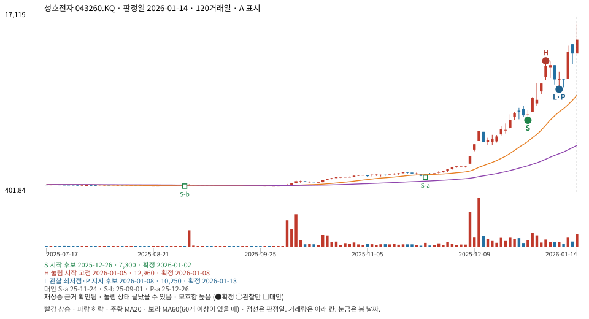
| 표시 | 날짜 | 가격 | 관찰 가능 시점 | 확정 | 읽은 이유 |
|---|---|---|---|---|---|
| S 시작 후보 | 2025-12-26 | 7,300 | 2025-12-26 마감 | 확정 2026-01-02 | H보다 앞선 가장 가까운 확정 저점 |
| S-a 대안 | 2025-11-24 | 1,860 | 2025-11-24 마감 | 확정 2025-11-27 | 첫 급등 2,355 뒤 눌림에서 가속이 시작된 저점 |
| S-b 대안 | 2025-09-01 | 1,021 | 2025-09-01 마감 | 확정 2025-09-04 | 횡보 바닥에서 전체 상승이 시작된 저점 |
| H 눌림 시작 고점 | 2026-01-05 | 12,960 | 2026-01-05 마감 | 확정 2026-01-08 | 1월 8일 하락 직전의 고점. 판정일에 이 고점을 넘는 새 고점이 나왔으므로, 진행 중인 눌림이 아니라 이미 끝난 마지막 눌림의 고점이다 |
| L 관찰 최저점 | 2026-01-08 | 10,250 | 2026-01-08 마감 | 확정 2026-01-13 | H 다음 봉부터 판정일까지의 가장 낮은 저가. 도구가 계산한 값이다 |
| P 지지 후보 | 2026-01-08 | 10,250 | 2026-01-08 마감 | 확정 2026-01-13 | 하락 최저점을 지지 후보로 읽음 |
| P-a 대안 | 2025-12-26 | 7,300 | 2025-12-26 마감 | 확정 2026-01-02 | 마지막 상승 아래의 앞선 확정 저점 |
재상승 근거 (확인됨): 가격이 이미 눌림의 고점을 넘었다
2026-01-12 · 종가 13,800이 H 고가 12,960 위
2026-01-14 · 판정일에 신고가 16,500
모호한 점 (높음): 4개월에 약 12배가 올라 상승 구간의 시작을 하나로 정하기 어렵고, 선형 차트라 앞부분이 눌려 보인다
자료 메모: 판정일에 진행 중인 눌림은 없다.
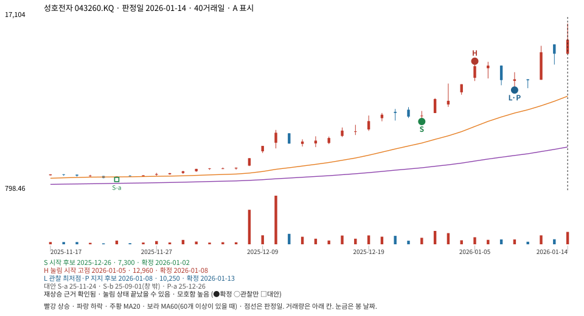
코드 대조 (A 고정 뒤 작성) · 차트가 모호
표본 구분: 눌림 자체 상태가 탈락(rejected_rr) · 눌림 자체 상태: rejected_rr (확인 후 손익비 탈락) · 그날 최종 상태: rejected_rr · 최종 계획 패턴: trend_pullback
공통 차단 사유: 없음 · 눌림 자체 차단: 없음
구간 시작 좌표: 명시적 시작 좌표 없음 (패키지 기록: pullback_start=unrecorded)
| 코드 창 | 기간 | 창 안 극값 | A 표시와 비교 |
|---|---|---|---|
| 목표 기준(마지막 봉 제외 20봉) | 2025-12-12 ~ 2026-01-13 (20봉) | 최고 2026-01-13 · 14,550 | A의 H 2026-01-05 · 12,960와 다름 |
| 손절 기준(최근 10봉) | 2025-12-30 ~ 2026-01-14 (10봉) | 최저 2025-12-30 · 8,670 | A의 L 2026-01-08 · 10,250와 다름 · A의 H보다 앞 |
| 추세 비교: 최근 20봉 | 2025-12-15 ~ 2026-01-14 (20봉) | 최고 2026-01-14 · 16,500 | A의 H 2026-01-05는 이 창 안: 예 |
| 추세 비교: 직전 20봉 | 2025-11-17 ~ 2025-12-12 (20봉) | 최저 2025-11-24 · 1,860 | A의 S 2025-12-26는 최근 40봉 안: 예 |
| 근접 확인(판정일 직전 5봉) | 2026-01-07 ~ 2026-01-13 (5봉) | 최저 2026-01-08 · 10,250 | MA20+0.75ATR 이하인지 보는 창 |
| 거래량 확인 | 2026-01-09 ~ 2026-01-13 (3봉) vs 2025-12-09 ~ 2026-01-08 (20봉) | 비율 0.601 | 코드 기준 0.85 미만이면 감소로 봄 |
눌림 코드 게이트: rising_structure=예 · atr_valid=예 · valid_zone=예 · near_ma20=예 · volume_contracted=예 · recovery_close=예 · bullish_candle=예 · volume_recovery=예 · fresh_confirmation=예
저장된 값(가격 수준): 진입 14980 · 손절 8319 · 목표 14550 · 손익비 -0.065 · 후보 구간 8980~10383
| 돌파와 목표의 관계 (세 항목은 따로 계산) | ||
|---|---|---|
| A의 H 2026-01-05 · 12,960 고가 돌파 | 판정일 예 | H 이후 처음 2026-01-12 |
| A의 H 종가 돌파 | 판정일 예 | H 이후 처음 2026-01-12 |
| 목표 기준 2026-01-13 · 14,550 (판정일 제외 20봉 최고) | 판정일 고가 초과 예 | 판정일 종가 초과 예 |
| 목표가 ≤ 진입 기준: 목표 14,550 / 저장된 진입가 14,980 | 예 저장된 진입가와 목표가를 비교한 값 | |
- 목표 기준 고점 2026-01-13(14,550)은 A의 H 2026-01-05(12,960)와 날짜가 다르다.
- 손절 기준 저점 2025-12-30(8,670)은 A의 L 2026-01-08(10,250)와 날짜가 다르다.
- 손절 기준 저점 2025-12-30은 A의 H 2026-01-05보다 앞이다. 코드의 10봉 창이 눌림이 아니라 그 앞의 상승 구간 저점을 잡았다.
- 판정일 고가 16,500가 목표 기준 최고 14,550를 넘었다(고가 돌파).
- 목표가 14,550가 저장된 진입가 14,980 이하이다. 종가가 목표 기준 이상인 경우다.
- A의 H 2026-01-05 이후 고가 돌파 2026-01-12 · 종가 돌파 2026-01-12.
- A는 눌림이 끝났을 수 있다고 읽었다.
태그: excluded_by_target_rr, target_ref_not_A_H, stop_ref_not_A_L
추가 검토 (B 확인 뒤, 블라인드 아님) · 큰 조정 시작 고점과 최근 재하락 시작 고점 · 손절 기준 재비교 대상
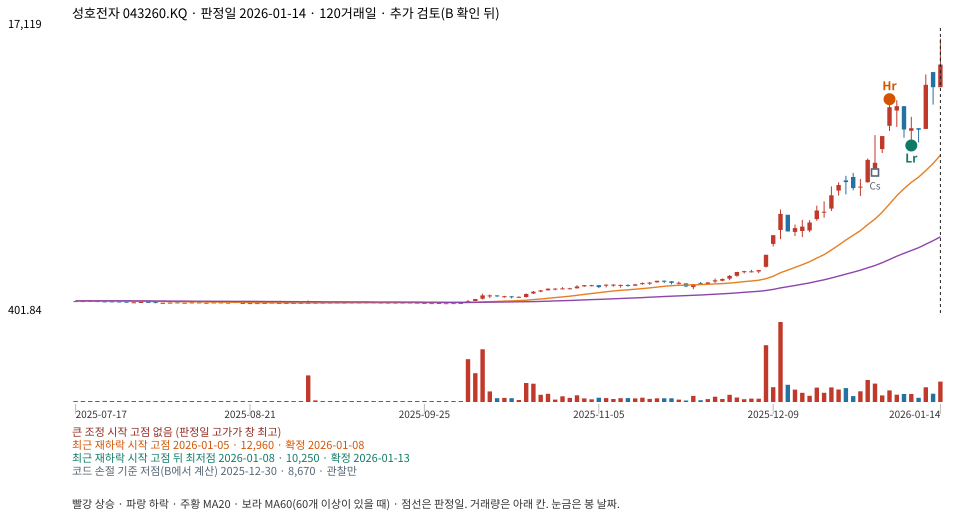
| 구분 | 상태 | 날짜 | 가격 | 확정 | 읽은 이유 |
|---|---|---|---|---|---|
| 큰 조정 시작 고점 (H_big) | 없음 | - | 판정일 고가가 창 최고다. 현재 진행 중인 큰 조정이 없다 | ||
| 최근 재하락 시작 고점 (H_recent) | 표시 | 2026-01-05 | 12,960 | 확정 2026-01-08 | H_big이 없어 A의 H main(1월 5일)을 인용했다. 판정일 신고가로 이미 넘어섰다 |
| H_big 뒤 최저점 | 없음 | - | 계산값 | ||
| H_recent 뒤 최저점 | 표시 | 2026-01-08 | 10,250 | 확정 2026-01-13 | 계산값 |
| 코드 손절 기준 저점(B) | - | 2025-12-30 | 8,670 | - | 창 2025-12-30 ~ 2026-01-14 |
재비교: 코드 기준 저점이 최근 재하락 시작 고점보다 앞 (보류 또는 없음 후보를 포함한 비교)
2. S-Oil 010950.KS · 판정일 2026-08-07 · 01bea56f4af0f31f
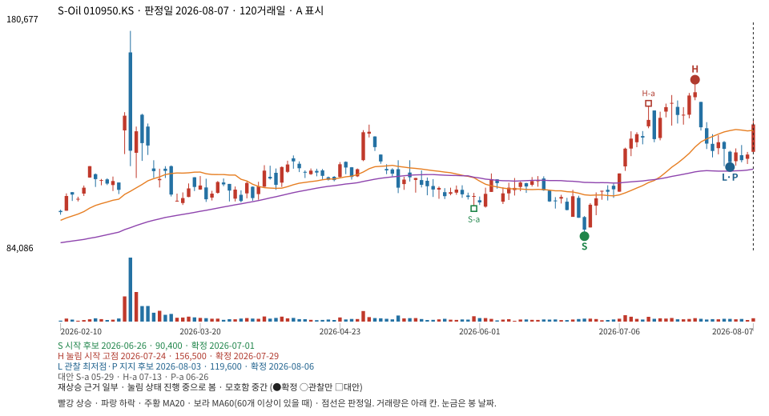
| 표시 | 날짜 | 가격 | 관찰 가능 시점 | 확정 | 읽은 이유 |
|---|---|---|---|---|---|
| S 시작 후보 | 2026-06-26 | 90,400 | 2026-06-26 마감 | 확정 2026-07-01 | H보다 앞선 가장 가까운 확정 저점 |
| S-a 대안 | 2026-05-29 | 102,100 | 2026-05-29 마감 | 확정 2026-06-04 | 그 앞의 바닥 저점 |
| H 눌림 시작 고점 | 2026-07-24 | 156,500 | 2026-07-24 마감 | 확정 2026-07-29 | 8월 초 하락 직전의 가장 높은 고가 |
| H-a 대안 | 2026-07-13 | 146,500 | 2026-07-13 마감 | 확정 2026-07-16 | 같은 상승의 앞선 고점, 1만원 낮음 |
| L 관찰 최저점 | 2026-08-03 | 119,600 | 2026-08-03 마감 | 확정 2026-08-06 | H 다음 봉부터 판정일까지의 가장 낮은 저가. 도구가 계산한 값이다 |
| P 지지 후보 | 2026-08-03 | 119,600 | 2026-08-03 마감 | 확정 2026-08-06 | 하락 최저점 |
| P-a 대안 | 2026-06-26 | 90,400 | 2026-06-26 마감 | 확정 2026-07-01 | 상승의 바닥 |
재상승 근거 (일부): 하루의 강한 반등이다. H 고가와 7월 27일 고가 아래
2026-08-07 · 종가 137,600이 직전 3거래일 고가와 20일 평균 위
모호한 점 (중간): 3월의 하루짜리 급등 177,100이 창 안에 있지만 현재 상승과 무관하다
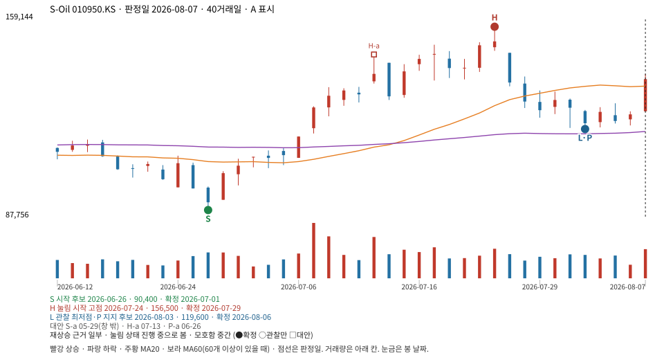
코드 대조 (A 고정 뒤 작성) · 구조는 맞으나 목표/손익비로 제외
표본 구분: 눌림 자체 상태가 탈락(rejected_rr) · 눌림 자체 상태: rejected_rr (확인 후 손익비 탈락) · 그날 최종 상태: rejected_rr · 최종 계획 패턴: trend_recovery
공통 차단 사유: 없음 · 눌림 자체 차단: 없음
구간 시작 좌표: 명시적 시작 좌표 없음 (패키지 기록: pullback_start=unrecorded)
| 코드 창 | 기간 | 창 안 극값 | A 표시와 비교 |
|---|---|---|---|
| 목표 기준(마지막 봉 제외 20봉) | 2026-07-09 ~ 2026-08-06 (20봉) | 최고 2026-07-24 · 156,500 | A의 H와 같은 날 |
| 손절 기준(최근 10봉) | 2026-07-27 ~ 2026-08-07 (10봉) | 최저 2026-08-03 · 119,600 | A의 L과 같은 날 |
| 추세 비교: 최근 20봉 | 2026-07-10 ~ 2026-08-07 (20봉) | 최고 2026-07-24 · 156,500 | A의 H 2026-07-24는 이 창 안: 예 |
| 추세 비교: 직전 20봉 | 2026-06-12 ~ 2026-07-09 (20봉) | 최저 2026-06-26 · 90,400 | A의 S 2026-06-26는 최근 40봉 안: 예 |
| 근접 확인(판정일 직전 5봉) | 2026-07-31 ~ 2026-08-06 (5봉) | 최저 2026-08-03 · 119,600 | MA20+0.75ATR 이하인지 보는 창 |
| 거래량 확인 | 2026-08-04 ~ 2026-08-06 (3봉) vs 2026-07-06 ~ 2026-08-03 (20봉) | 비율 0.697 | 코드 기준 0.85 미만이면 감소로 봄 |
눌림 코드 게이트: rising_structure=예 · atr_valid=예 · valid_zone=예 · near_ma20=예 · volume_contracted=예 · recovery_close=예 · bullish_candle=예 · volume_recovery=예 · fresh_confirmation=예
저장된 값(가격 수준): 진입 137600 · 손절 117679 · 목표 156500 · 손익비 0.949 · 후보 구간 131233~138916
| 돌파와 목표의 관계 (세 항목은 따로 계산) | ||
|---|---|---|
| A의 H 2026-07-24 · 156,500 고가 돌파 | 판정일 아니오 | H 이후 처음 없음 |
| A의 H 종가 돌파 | 판정일 아니오 | H 이후 처음 없음 |
| 목표 기준 2026-07-24 · 156,500 (판정일 제외 20봉 최고) | 판정일 고가 초과 아니오 | 판정일 종가 초과 아니오 |
| 목표가 ≤ 진입 기준: 목표 156,500 / 저장된 진입가 137,600 | 아니오 저장된 진입가와 목표가를 비교한 값 | |
- 이 날의 최종 계획은 trend_recovery이다. 눌림 패턴 자체 상태는 rejected_rr.
추가 검토 (B 확인 뒤, 블라인드 아님) · 큰 조정 시작 고점과 최근 재하락 시작 고점
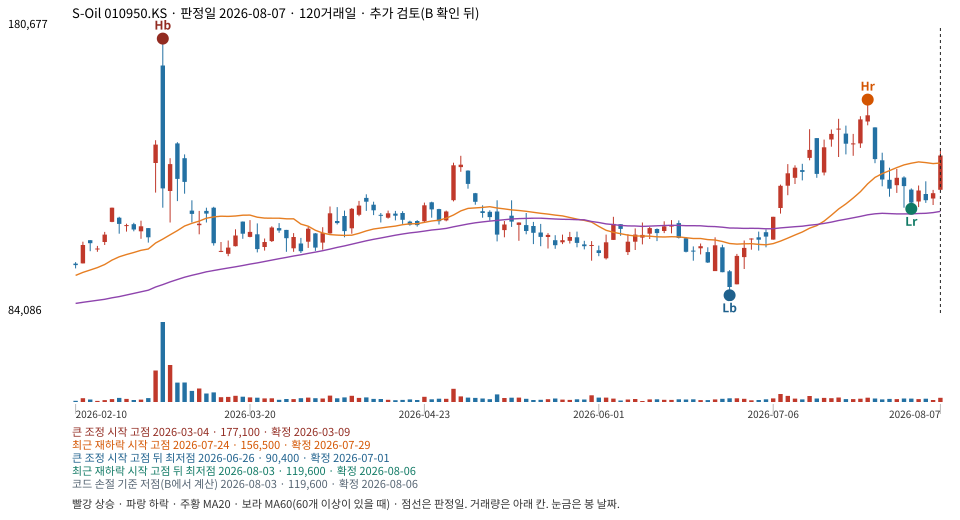
| 구분 | 상태 | 날짜 | 가격 | 확정 | 읽은 이유 |
|---|---|---|---|---|---|
| 큰 조정 시작 고점 (H_big) | 표시 | 2026-03-04 | 177,100 | 확정 2026-03-09 | 창 최고는 3월 4일의 거래량 큰 하루 급등 봉이다. 그 뒤 6월 26일까지 약 49% 내렸다. 급등 봉이라 큰 조정의 출발로 볼지는 읽는 사람에 따라 갈린다 |
| 최근 재하락 시작 고점 (H_recent) | 표시 | 2026-07-24 | 156,500 | 확정 2026-07-29 | 저점 뒤 확정 피벗 고점 7월 24일에서 8월 3일까지 재하락 |
| H_big 뒤 최저점 | 표시 | 2026-06-26 | 90,400 | 확정 2026-07-01 | 계산값 |
| H_recent 뒤 최저점 | 표시 | 2026-08-03 | 119,600 | 확정 2026-08-06 | 계산값 |
| 코드 손절 기준 저점(B) | - | 2026-08-03 | 119,600 | - | 창 2026-07-27 ~ 2026-08-07 |
재비교 (참고: 이 사례는 손절 기준 저점이 A의 L과 같았다): 최근 재하락 저점과 일치
3. 테스 095610.KQ · 판정일 2026-01-15 · 029fd9c7a4f3fcb6
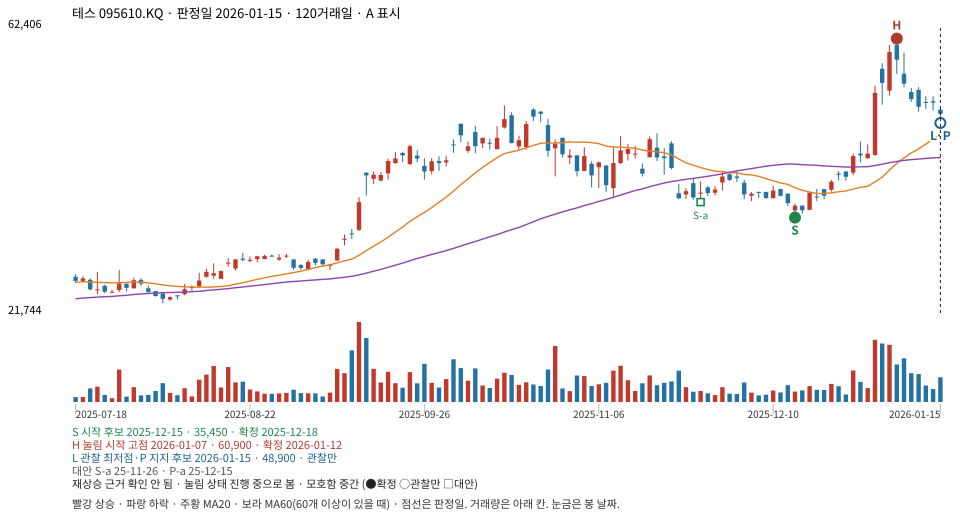
| 표시 | 날짜 | 가격 | 관찰 가능 시점 | 확정 | 읽은 이유 |
|---|---|---|---|---|---|
| S 시작 후보 | 2025-12-15 | 35,450 | 2025-12-15 마감 | 확정 2025-12-18 | H보다 앞선 가장 가까운 확정 저점 |
| S-a 대안 | 2025-11-26 | 37,650 | 2025-11-26 마감 | 확정 2025-12-01 | 같은 바닥의 앞선 저점 |
| H 눌림 시작 고점 | 2026-01-07 | 60,900 | 2026-01-07 마감 | 확정 2026-01-12 | 1월 급등의 정점 |
| L 관찰 최저점 | 2026-01-15 | 48,900 | 2026-01-15 마감 | 관찰만 · 판정일까지 오른쪽 완료 봉이 3개 미만 | H 다음 봉부터 판정일까지의 가장 낮은 저가. 도구가 계산한 값이다 |
| P 지지 후보 | 2026-01-15 | 48,900 | 2026-01-15 마감 | 관찰만 · 판정일까지 오른쪽 완료 봉이 3개 미만 | 관찰 최저점이 판정일 봉 하나뿐 |
| P-a 대안 | 2025-12-15 | 35,450 | 2025-12-15 마감 | 확정 2025-12-18 | 마지막 확정 저점. 현재 저점은 판정일 봉 |
재상승 근거 (확인 안 됨): 1월 7일 뒤 종가가 계단식으로 낮아지고 최저점이 판정일이라 올라간 저점이 아직 없다
모호한 점 (중간): 관찰 최저점이 오늘 봉이라 확정되지 않았다
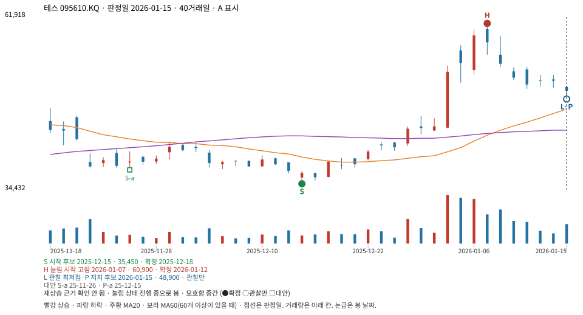
코드 대조 (A 고정 뒤 작성) · 구간이 다름
표본 구분: 눌림 자체 상태가 대기 · 눌림 자체 상태: wait_pullback (눌림 대기) · 그날 최종 상태: wait_pullback · 최종 계획 패턴: trend_pullback
공통 차단 사유: 없음 · 눌림 자체 차단: 없음
구간 시작 좌표: 명시적 시작 좌표 없음 (패키지 기록: pullback_start=unrecorded)
| 코드 창 | 기간 | 창 안 극값 | A 표시와 비교 |
|---|---|---|---|
| 목표 기준(마지막 봉 제외 20봉) | 2025-12-15 ~ 2026-01-14 (20봉) | 최고 2026-01-07 · 60,900 | A의 H와 같은 날 |
| 손절 기준(최근 10봉) | 2026-01-02 ~ 2026-01-15 (10봉) | 최저 2026-01-02 · 44,250 | A의 L 2026-01-15 · 48,900와 다름 · A의 H보다 앞 |
| 추세 비교: 최근 20봉 | 2025-12-16 ~ 2026-01-15 (20봉) | 최고 2026-01-07 · 60,900 | A의 H 2026-01-07는 이 창 안: 예 |
| 추세 비교: 직전 20봉 | 2025-11-18 ~ 2025-12-15 (20봉) | 최저 2025-12-15 · 35,450 | A의 S 2025-12-15는 최근 40봉 안: 예 |
| 근접 확인(판정일 직전 5봉) | 2026-01-08 ~ 2026-01-14 (5봉) | 최저 2026-01-12 · 50,500 | MA20+0.75ATR 이하인지 보는 창 |
| 거래량 확인 | 2026-01-12 ~ 2026-01-14 (3봉) vs 2025-12-10 ~ 2026-01-09 (20봉) | 비율 0.771 | 코드 기준 0.85 미만이면 감소로 봄 |
눌림 코드 게이트: rising_structure=예 · atr_valid=예 · valid_zone=예 · near_ma20=아니오 · volume_contracted=예 · recovery_close=아니오 · bullish_candle=아니오 · volume_recovery=예 · fresh_confirmation=예
저장된 값(가격 수준): 진입 - · 손절 43457 · 목표 60900 · 손익비 - · 후보 구간 45683~48851
| 돌파와 목표의 관계 (세 항목은 따로 계산) | ||
|---|---|---|
| A의 H 2026-01-07 · 60,900 고가 돌파 | 판정일 아니오 | H 이후 처음 없음 |
| A의 H 종가 돌파 | 판정일 아니오 | H 이후 처음 없음 |
| 목표 기준 2026-01-07 · 60,900 (판정일 제외 20봉 최고) | 판정일 고가 초과 아니오 | 판정일 종가 초과 아니오 |
| 목표가 ≤ 진입 기준: 목표 60,900 / 당일 종가(실제 진입 계획 없음) 50,200 | 아니오 실제 진입 계획이 없어 당일 종가(소수점 버림)와 후보 목표가를 비교한 값 | |
- 손절 기준 저점 2026-01-02(44,250)은 A의 L 2026-01-15(48,900)와 날짜가 다르다.
- 손절 기준 저점 2026-01-02은 A의 H 2026-01-07보다 앞이다. 코드의 10봉 창이 눌림이 아니라 그 앞의 상승 구간 저점을 잡았다.
태그: stop_ref_not_A_L
추가 검토 (B 확인 뒤, 블라인드 아님) · 큰 조정 시작 고점과 최근 재하락 시작 고점 · 손절 기준 재비교 대상
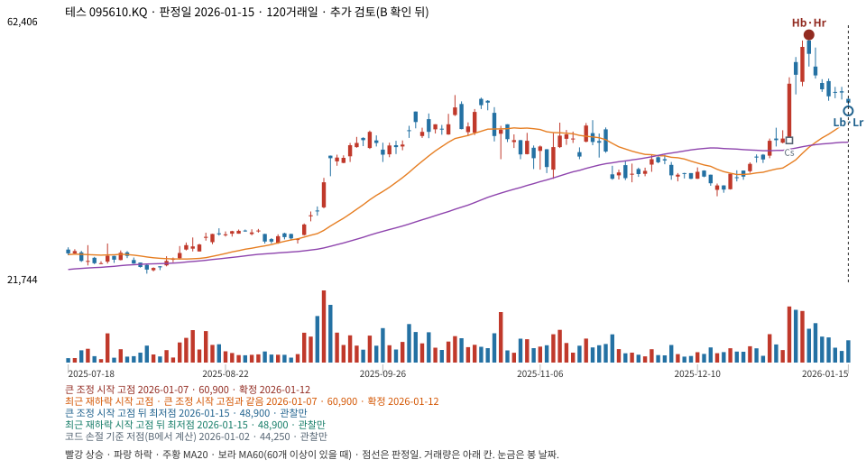
| 구분 | 상태 | 날짜 | 가격 | 확정 | 읽은 이유 |
|---|---|---|---|---|---|
| 큰 조정 시작 고점 (H_big) | 표시 | 2026-01-07 | 60,900 | 확정 2026-01-12 | 창 최고가 A의 H와 같다 |
| 최근 재하락 시작 고점 (H_recent) | 표시 · H_big과 같음 | 2026-01-07 | 60,900 | 확정 2026-01-12 | 재하락 갈래가 없어 H_big과 같다 |
| H_big 뒤 최저점 | 표시 | 2026-01-15 | 48,900 | 관찰만 · 판정일까지 오른쪽 완료 봉이 3개 미만 | 계산값 |
| H_recent 뒤 최저점 | 표시 | 2026-01-15 | 48,900 | 관찰만 · 판정일까지 오른쪽 완료 봉이 3개 미만 | 계산값 |
| 코드 손절 기준 저점(B) | - | 2026-01-02 | 44,250 | - | 창 2026-01-02 ~ 2026-01-15 |
재비교: 코드 기준 저점이 최근 재하락 시작 고점보다 앞
4. 하나마이크론 067310.KQ · 판정일 2025-10-14 · 03779fd61d439aed
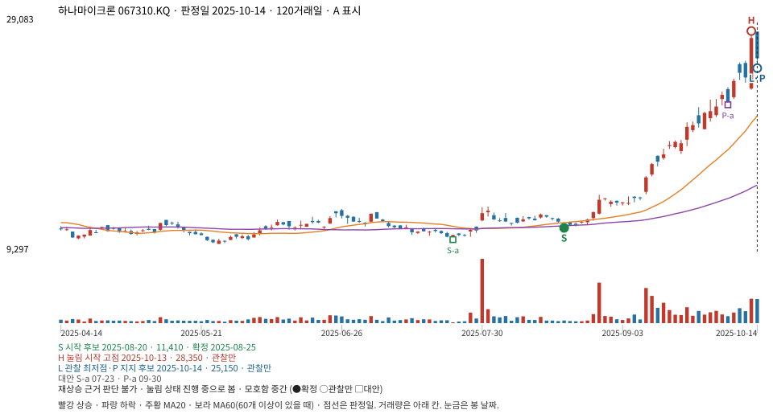
| 표시 | 날짜 | 가격 | 관찰 가능 시점 | 확정 | 읽은 이유 |
|---|---|---|---|---|---|
| S 시작 후보 | 2025-08-20 | 11,410 | 2025-08-20 마감 | 확정 2025-08-25 | H보다 앞선 가장 가까운 확정 저점 |
| S-a 대안 | 2025-07-23 | 10,400 | 2025-07-23 마감 | 확정 2025-07-28 | 같은 바닥의 앞선 저점 |
| H 눌림 시작 고점 | 2025-10-13 | 28,350 | 2025-10-13 마감 | 관찰만 · 판정일까지 오른쪽 완료 봉이 3개 미만 | 거의 수직 상승 뒤의 최근 고점. 그 뒤 완료 봉이 하나뿐 |
| L 관찰 최저점 | 2025-10-14 | 25,150 | 2025-10-14 마감 | 관찰만 · 판정일까지 오른쪽 완료 봉이 3개 미만 | H 다음 봉부터 판정일까지의 가장 낮은 저가. 도구가 계산한 값이다 |
| P 지지 후보 | 2025-10-14 | 25,150 | 2025-10-14 마감 | 관찰만 · 판정일까지 오른쪽 완료 봉이 3개 미만 | 판정일 봉 |
| P-a 대안 | 2025-09-30 | 22,000 | 2025-09-30 마감 | 관찰만 · 3봉 안에 같거나 더 극단적인 봉이 있음 | 마지막 가속 직전의 조용한 저점. 확정 피벗은 아님 |
재상승 근거 (판단 불가): 눌림이 한 봉이라 확인하거나 부정할 근거가 없다
모호한 점 (중간): H와 L이 마지막 두 봉이라 한 봉 하락이 눌림 구간인지 아직 알 수 없다
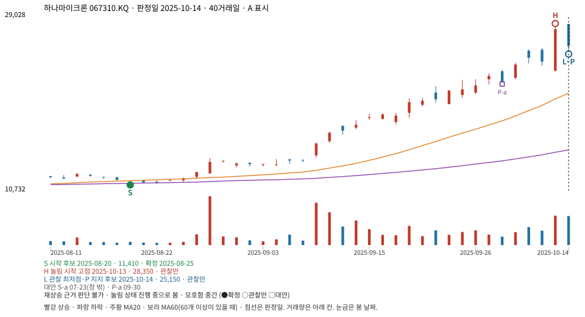
코드 대조 (A 고정 뒤 작성) · 구간이 다름
표본 구분: 눌림 자체 상태가 대기 · 눌림 자체 상태: await_confirmation (반등 확인 대기) · 그날 최종 상태: await_confirmation · 최종 계획 패턴: trend_pullback
공통 차단 사유: 없음 · 눌림 자체 차단: 없음
구간 시작 좌표: 명시적 시작 좌표 없음 (패키지 기록: pullback_start=unrecorded)
| 코드 창 | 기간 | 창 안 극값 | A 표시와 비교 |
|---|---|---|---|
| 목표 기준(마지막 봉 제외 20봉) | 2025-09-08 ~ 2025-10-13 (20봉) | 최고 2025-10-13 · 28,350 | A의 H와 같은 날 |
| 손절 기준(최근 10봉) | 2025-09-24 ~ 2025-10-14 (10봉) | 최저 2025-09-24 · 19,880 | A의 L 2025-10-14 · 25,150와 다름 · A의 H보다 앞 |
| 추세 비교: 최근 20봉 | 2025-09-09 ~ 2025-10-14 (20봉) | 최고 2025-10-13 · 28,350 | A의 H 2025-10-13는 이 창 안: 예 |
| 추세 비교: 직전 20봉 | 2025-08-11 ~ 2025-09-08 (20봉) | 최저 2025-08-20 · 11,410 | A의 S 2025-08-20는 최근 40봉 안: 예 |
| 근접 확인(판정일 직전 5봉) | 2025-09-30 ~ 2025-10-13 (5봉) | 최저 2025-09-30 · 22,000 | MA20+0.75ATR 이하인지 보는 창 |
| 거래량 확인 | 2025-10-02 ~ 2025-10-13 (3봉) vs 2025-09-03 ~ 2025-10-01 (20봉) | 비율 1.416 | 코드 기준 0.85 미만이면 감소로 봄 |
눌림 코드 게이트: rising_structure=예 · atr_valid=예 · valid_zone=예 · near_ma20=예 · volume_contracted=아니오 · recovery_close=아니오 · bullish_candle=아니오 · volume_recovery=아니오 · fresh_confirmation=아니오
저장된 값(가격 수준): 진입 - · 손절 19487 · 목표 28350 · 손익비 - · 후보 구간 20253~21824
| 돌파와 목표의 관계 (세 항목은 따로 계산) | ||
|---|---|---|
| A의 H 2025-10-13 · 28,350 고가 돌파 | 판정일 아니오 | H 이후 처음 없음 |
| A의 H 종가 돌파 | 판정일 아니오 | H 이후 처음 없음 |
| 목표 기준 2025-10-13 · 28,350 (판정일 제외 20봉 최고) | 판정일 고가 초과 아니오 | 판정일 종가 초과 아니오 |
| 목표가 ≤ 진입 기준: 목표 28,350 / 당일 종가(실제 진입 계획 없음) 26,000 | 아니오 실제 진입 계획이 없어 당일 종가(소수점 버림)와 후보 목표가를 비교한 값 | |
- 손절 기준 저점 2025-09-24(19,880)은 A의 L 2025-10-14(25,150)와 날짜가 다르다.
- 손절 기준 저점 2025-09-24은 A의 H 2025-10-13보다 앞이다. 코드의 10봉 창이 눌림이 아니라 그 앞의 상승 구간 저점을 잡았다.
태그: stop_ref_not_A_L
추가 검토 (B 확인 뒤, 블라인드 아님) · 큰 조정 시작 고점과 최근 재하락 시작 고점 · 손절 기준 재비교 대상
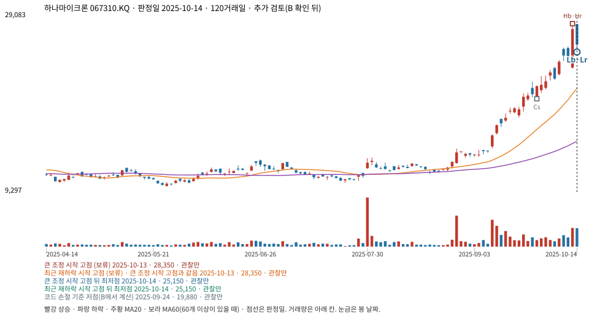
| 구분 | 상태 | 날짜 | 가격 | 확정 | 읽은 이유 |
|---|---|---|---|---|---|
| 큰 조정 시작 고점 (H_big) | 보류 | 2025-10-13 | 28,350 | 관찰만 · 판정일까지 오른쪽 완료 봉이 3개 미만 | 창 최고 뒤 완료 봉이 하나뿐이라 큰 조정인지 판단할 수 없다 |
| 최근 재하락 시작 고점 (H_recent) | 보류 · H_big과 같음 | 2025-10-13 | 28,350 | 관찰만 · 판정일까지 오른쪽 완료 봉이 3개 미만 | 하락이 한 봉이라 재하락 시작 고점을 정할 수 없다 |
| H_big 뒤 최저점 | 보류 | 2025-10-14 | 25,150 | 관찰만 · 판정일까지 오른쪽 완료 봉이 3개 미만 | 계산값 |
| H_recent 뒤 최저점 | 보류 | 2025-10-14 | 25,150 | 관찰만 · 판정일까지 오른쪽 완료 봉이 3개 미만 | 계산값 |
| 코드 손절 기준 저점(B) | - | 2025-09-24 | 19,880 | - | 창 2025-09-24 ~ 2025-10-14 |
재비교: 코드 기준 저점이 최근 재하락 시작 고점보다 앞 (보류 또는 없음 후보를 포함한 비교)
5. 우리넷 115440.KQ · 판정일 2025-10-28 · 03c915d929f4769a
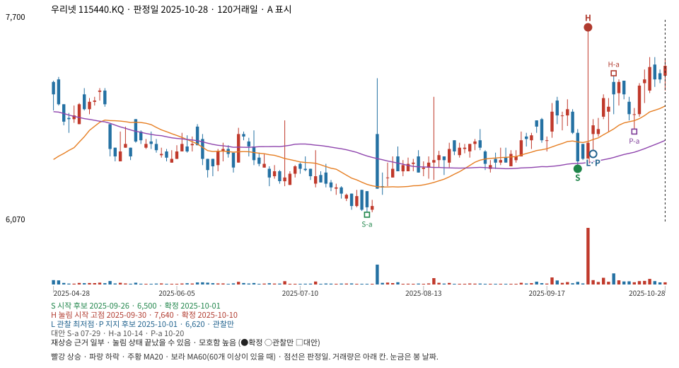
| 표시 | 날짜 | 가격 | 관찰 가능 시점 | 확정 | 읽은 이유 |
|---|---|---|---|---|---|
| S 시작 후보 | 2025-09-26 | 6,500 | 2025-09-26 마감 | 확정 2025-10-01 | H보다 앞선 가장 가까운 확정 저점 |
| S-a 대안 | 2025-07-29 | 6,130 | 2025-07-29 마감 | 확정 2025-08-01 | 여름 바닥의 저점 |
| H 눌림 시작 고점 | 2025-09-30 | 7,640 | 2025-09-30 마감 | 확정 2025-10-10 | 거래량 3백만의 위꼬리 급등 하루. 종가는 6,710으로 되돌렸다 |
| H-a 대안 | 2025-10-14 | 7,270 | 2025-10-14 마감 | 확정 2025-10-17 | 같은 횡보 안의 나중의 낮은 고점 |
| L 관찰 최저점 | 2025-10-01 | 6,620 | 2025-10-01 마감 | 관찰만 · 3봉 안에 같거나 더 극단적인 봉이 있음 | H 다음 봉부터 판정일까지의 가장 낮은 저가. 도구가 계산한 값이다 |
| P 지지 후보 | 2025-10-01 | 6,620 | 2025-10-01 마감 | 관찰만 · 3봉 안에 같거나 더 극단적인 봉이 있음 | H 다음 봉부터의 최저 저가 |
| P-a 대안 | 2025-10-20 | 6,800 | 2025-10-20 마감 | 확정 2025-10-23 | 10월 1일 저점보다 높은 두 번째 저점 |
재상승 근거 (일부): 저점은 올라가지만 종가는 H 고가 7,640 아래
2025-10-20 · 저가 6,800이 10월 1일 저가 6,620보다 높고, 이후 저가가 모두 6,900 이상
모호한 점 (높음): H가 하루짜리 위꼬리 급등이고 L이 바로 다음 날이다. 눌림이라기보다 6,600~7,400 횡보로도 읽힌다
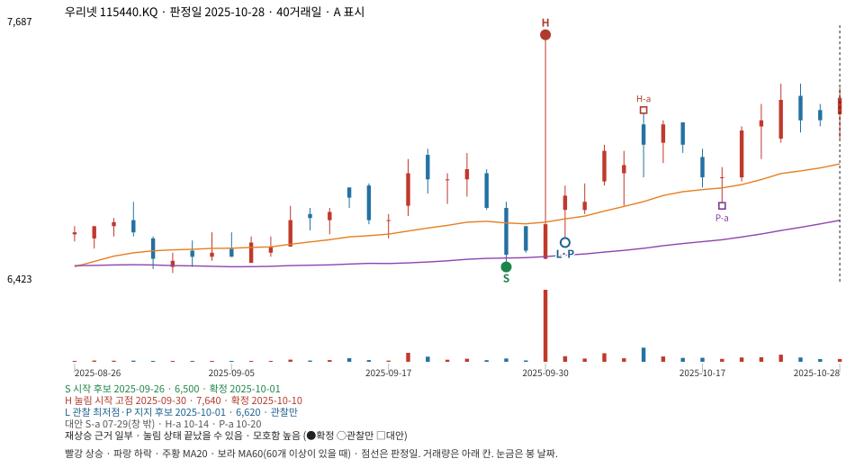
코드 대조 (A 고정 뒤 작성) · 구조는 맞으나 목표/손익비로 제외
표본 구분: 눌림 자체 상태가 탈락(rejected_rr) · 눌림 자체 상태: rejected_rr (확인 후 손익비 탈락) · 그날 최종 상태: rejected_rr · 최종 계획 패턴: trend_pullback
공통 차단 사유: 없음 · 눌림 자체 차단: 없음
구간 시작 좌표: 명시적 시작 좌표 없음 (패키지 기록: pullback_start=unrecorded)
| 코드 창 | 기간 | 창 안 극값 | A 표시와 비교 |
|---|---|---|---|
| 목표 기준(마지막 봉 제외 20봉) | 2025-09-23 ~ 2025-10-27 (20봉) | 최고 2025-09-30 · 7,640 | A의 H와 같은 날 |
| 손절 기준(최근 10봉) | 2025-10-15 ~ 2025-10-28 (10봉) | 최저 2025-10-20 · 6,800 | A의 L 2025-10-01 · 6,620와 다름 · A의 L이 창 밖 |
| 추세 비교: 최근 20봉 | 2025-09-24 ~ 2025-10-28 (20봉) | 최고 2025-09-30 · 7,640 | A의 H 2025-09-30는 이 창 안: 예 |
| 추세 비교: 직전 20봉 | 2025-08-26 ~ 2025-09-23 (20봉) | 최저 2025-09-02 · 6,470 | A의 S 2025-09-26는 최근 40봉 안: 예 |
| 근접 확인(판정일 직전 5봉) | 2025-10-21 ~ 2025-10-27 (5봉) | 최저 2025-10-21 · 6,920 | MA20+0.75ATR 이하인지 보는 창 |
| 거래량 확인 | 2025-10-23 ~ 2025-10-27 (3봉) vs 2025-09-17 ~ 2025-10-22 (20봉) | 비율 0.593 | 코드 기준 0.85 미만이면 감소로 봄 |
눌림 코드 게이트: rising_structure=예 · atr_valid=예 · valid_zone=예 · near_ma20=예 · volume_contracted=예 · recovery_close=예 · bullish_candle=예 · volume_recovery=예 · fresh_confirmation=예
저장된 값(가격 수준): 진입 7330 · 손절 6754 · 목표 7640 · 손익비 0.538 · 후보 구간 6914~7098
| 돌파와 목표의 관계 (세 항목은 따로 계산) | ||
|---|---|---|
| A의 H 2025-09-30 · 7,640 고가 돌파 | 판정일 아니오 | H 이후 처음 없음 |
| A의 H 종가 돌파 | 판정일 아니오 | H 이후 처음 없음 |
| 목표 기준 2025-09-30 · 7,640 (판정일 제외 20봉 최고) | 판정일 고가 초과 아니오 | 판정일 종가 초과 아니오 |
| 목표가 ≤ 진입 기준: 목표 7,640 / 저장된 진입가 7,330 | 아니오 저장된 진입가와 목표가를 비교한 값 | |
- 손절 기준 저점 2025-10-20(6,800)은 A의 L 2025-10-01(6,620)와 날짜가 다르다.
- A의 L 2025-10-01은 코드의 손절 기준 창(최근 10봉, 2025-10-15부터) 밖이다. 창이 눌림 구간보다 짧다.
- A는 눌림이 끝났을 수 있다고 읽었다.
태그: stop_ref_not_A_L
추가 검토 (B 확인 뒤, 블라인드 아님) · 큰 조정 시작 고점과 최근 재하락 시작 고점 · 손절 기준 재비교 대상
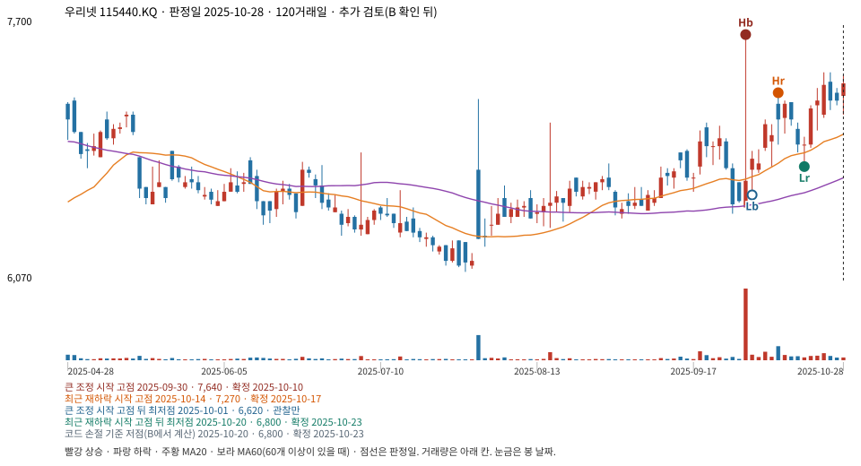
| 구분 | 상태 | 날짜 | 가격 | 확정 | 읽은 이유 |
|---|---|---|---|---|---|
| 큰 조정 시작 고점 (H_big) | 표시 | 2025-09-30 | 7,640 | 확정 2025-10-10 | 창 최고는 9월 30일의 거래량 큰 위꼬리 급등 봉이다. 저점이 바로 다음 날(10월 1일)이라 큰 조정이라기보다 급등 되돌림이다. 모호함이 높다 |
| 최근 재하락 시작 고점 (H_recent) | 표시 | 2025-10-14 | 7,270 | 확정 2025-10-17 | 10월 14일의 확정 피벗 고점에서 10월 20일까지 재하락 |
| H_big 뒤 최저점 | 표시 | 2025-10-01 | 6,620 | 관찰만 · 3봉 안에 같거나 더 극단적인 봉이 있음 | 계산값 |
| H_recent 뒤 최저점 | 표시 | 2025-10-20 | 6,800 | 확정 2025-10-23 | 계산값 |
| 코드 손절 기준 저점(B) | - | 2025-10-20 | 6,800 | - | 창 2025-10-15 ~ 2025-10-28 |
재비교: 최근 재하락 저점과 일치
6. 두산 000150.KS · 판정일 2025-05-19 · 03d016b5e47bae98
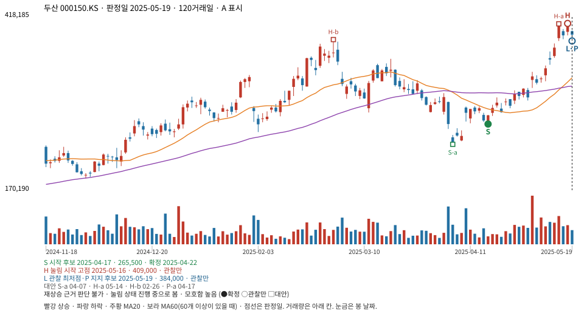
| 표시 | 날짜 | 가격 | 관찰 가능 시점 | 확정 | 읽은 이유 |
|---|---|---|---|---|---|
| S 시작 후보 | 2025-04-17 | 265,500 | 2025-04-17 마감 | 확정 2025-04-22 | H보다 앞선 가장 가까운 확정 저점 |
| S-a 대안 | 2025-04-07 | 236,500 | 2025-04-07 마감 | 확정 2025-04-10 | V자의 가장 낮은 점. 가장 가까운 확정 저점은 나중의 4월 17일 |
| H 눌림 시작 고점 | 2025-05-16 | 409,000 | 2025-05-16 마감 | 관찰만 · 판정일까지 오른쪽 완료 봉이 3개 미만 | 최근 고점. 그 뒤 완료 봉이 하나 |
| H-a 대안 | 2025-05-14 | 408,500 | 2025-05-14 마감 | 관찰만 · 3봉 안에 같거나 더 극단적인 봉이 있음 | 두 봉 앞의 거의 같은 고점 |
| H-b 대안 | 2025-02-26 | 386,000 | 2025-02-26 마감 | 확정 2025-03-04 | 앞선 39% 하락의 출발 고점. 현재 가격은 이 위 |
| L 관찰 최저점 | 2025-05-19 | 384,000 | 2025-05-19 마감 | 관찰만 · 판정일까지 오른쪽 완료 봉이 3개 미만 | H 다음 봉부터 판정일까지의 가장 낮은 저가. 도구가 계산한 값이다 |
| P 지지 후보 | 2025-05-19 | 384,000 | 2025-05-19 마감 | 관찰만 · 판정일까지 오른쪽 완료 봉이 3개 미만 | 판정일 저가 |
| P-a 대안 | 2025-04-17 | 265,500 | 2025-04-17 마감 | 확정 2025-04-22 | 마지막 확정 저점 |
재상승 근거 (판단 불가): V자 회복 뒤 한 봉 하락이라 근거를 따질 수 없다
모호한 점 (높음): 2~4월의 큰 하락이 신고가로 끝났고 현재 하락은 한 봉이다. 어느 쪽을 구간으로 볼지는 읽는 사람에 따라 갈린다
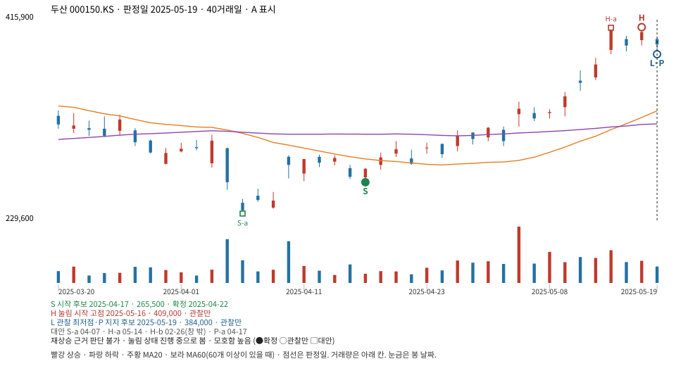
코드 대조 (A 고정 뒤 작성) · 차트가 모호
표본 구분: 눌림 자체 상태가 대기 · 눌림 자체 상태: wait_pullback (눌림 대기) · 그날 최종 상태: wait_pullback · 최종 계획 패턴: trend_pullback
공통 차단 사유: 없음 · 눌림 자체 차단: 없음
구간 시작 좌표: 명시적 시작 좌표 없음 (패키지 기록: pullback_start=unrecorded)
| 코드 창 | 기간 | 창 안 극값 | A 표시와 비교 |
|---|---|---|---|
| 목표 기준(마지막 봉 제외 20봉) | 2025-04-16 ~ 2025-05-16 (20봉) | 최고 2025-05-16 · 409,000 | A의 H와 같은 날 |
| 손절 기준(최근 10봉) | 2025-05-02 ~ 2025-05-19 (10봉) | 최저 2025-05-02 · 317,000 | A의 L 2025-05-19 · 384,000와 다름 · A의 H보다 앞 |
| 추세 비교: 최근 20봉 | 2025-04-17 ~ 2025-05-19 (20봉) | 최고 2025-05-16 · 409,000 | A의 H 2025-05-16는 이 창 안: 예 |
| 추세 비교: 직전 20봉 | 2025-03-20 ~ 2025-04-16 (20봉) | 최저 2025-04-07 · 236,500 | A의 S 2025-04-17는 최근 40봉 안: 예 |
| 근접 확인(판정일 직전 5봉) | 2025-05-12 ~ 2025-05-16 (5봉) | 최저 2025-05-12 · 350,000 | MA20+0.75ATR 이하인지 보는 창 |
| 거래량 확인 | 2025-05-14 ~ 2025-05-16 (3봉) vs 2025-04-11 ~ 2025-05-13 (20봉) | 비율 1.307 | 코드 기준 0.85 미만이면 감소로 봄 |
눌림 코드 게이트: rising_structure=예 · atr_valid=예 · valid_zone=예 · near_ma20=아니오 · volume_contracted=아니오 · recovery_close=아니오 · bullish_candle=아니오 · volume_recovery=아니오 · fresh_confirmation=아니오
저장된 값(가격 수준): 진입 - · 손절 312928 · 목표 409000 · 손익비 - · 후보 구간 323407~339692
| 돌파와 목표의 관계 (세 항목은 따로 계산) | ||
|---|---|---|
| A의 H 2025-05-16 · 409,000 고가 돌파 | 판정일 아니오 | H 이후 처음 없음 |
| A의 H 종가 돌파 | 판정일 아니오 | H 이후 처음 없음 |
| 목표 기준 2025-05-16 · 409,000 (판정일 제외 20봉 최고) | 판정일 고가 초과 아니오 | 판정일 종가 초과 아니오 |
| 목표가 ≤ 진입 기준: 목표 409,000 / 당일 종가(실제 진입 계획 없음) 393,000 | 아니오 실제 진입 계획이 없어 당일 종가(소수점 버림)와 후보 목표가를 비교한 값 | |
- 손절 기준 저점 2025-05-02(317,000)은 A의 L 2025-05-19(384,000)와 날짜가 다르다.
- 손절 기준 저점 2025-05-02은 A의 H 2025-05-16보다 앞이다. 코드의 10봉 창이 눌림이 아니라 그 앞의 상승 구간 저점을 잡았다.
태그: stop_ref_not_A_L
추가 검토 (B 확인 뒤, 블라인드 아님) · 큰 조정 시작 고점과 최근 재하락 시작 고점 · 손절 기준 재비교 대상
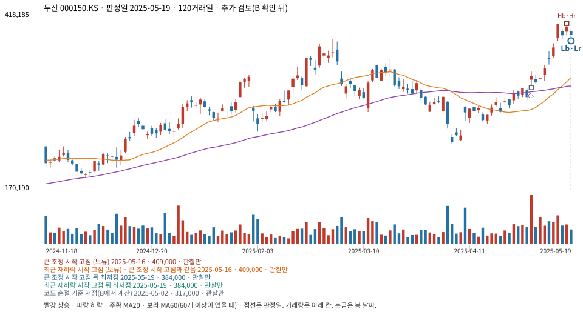
| 구분 | 상태 | 날짜 | 가격 | 확정 | 읽은 이유 |
|---|---|---|---|---|---|
| 큰 조정 시작 고점 (H_big) | 보류 | 2025-05-16 | 409,000 | 관찰만 · 판정일까지 오른쪽 완료 봉이 3개 미만 | 창 최고(5월 16일) 뒤 완료 봉이 하나뿐이다. 2~4월의 큰 조정은 고점(2월 26일 386,000)을 5월에 이미 넘었다 |
| 최근 재하락 시작 고점 (H_recent) | 보류 · H_big과 같음 | 2025-05-16 | 409,000 | 관찰만 · 판정일까지 오른쪽 완료 봉이 3개 미만 | 하락이 한 봉이라 재하락 시작 고점을 정할 수 없다 |
| H_big 뒤 최저점 | 보류 | 2025-05-19 | 384,000 | 관찰만 · 판정일까지 오른쪽 완료 봉이 3개 미만 | 계산값 |
| H_recent 뒤 최저점 | 보류 | 2025-05-19 | 384,000 | 관찰만 · 판정일까지 오른쪽 완료 봉이 3개 미만 | 계산값 |
| 코드 손절 기준 저점(B) | - | 2025-05-02 | 317,000 | - | 창 2025-05-02 ~ 2025-05-19 |
재비교: 코드 기준 저점이 최근 재하락 시작 고점보다 앞 (보류 또는 없음 후보를 포함한 비교)
7. 우리기술 032820.KQ · 판정일 2025-05-16 · 05a3f1e796e376c7
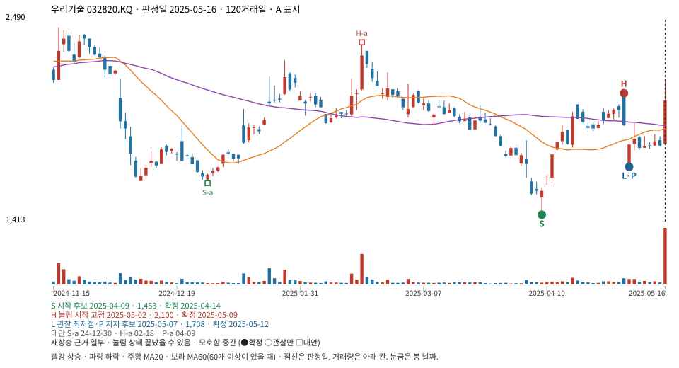
| 표시 | 날짜 | 가격 | 관찰 가능 시점 | 확정 | 읽은 이유 |
|---|---|---|---|---|---|
| S 시작 후보 | 2025-04-09 | 1,453 | 2025-04-09 마감 | 확정 2025-04-14 | H보다 앞선 가장 가까운 확정 저점 |
| S-a 대안 | 2024-12-30 | 1,621 | 2024-12-30 마감 | 확정 2025-01-06 | 2,370까지 가던 앞선 상승 아래의 저점 |
| H 눌림 시작 고점 | 2025-05-02 | 2,100 | 2025-05-02 마감 | 확정 2025-05-09 | 5월 초 하락 직전의 반등 고점 |
| H-a 대안 | 2025-02-18 | 2,370 | 2025-02-18 마감 | 확정 2025-02-21 | 4월 저점 앞의 더 큰 상승의 고점 |
| L 관찰 최저점 | 2025-05-07 | 1,708 | 2025-05-07 마감 | 확정 2025-05-12 | H 다음 봉부터 판정일까지의 가장 낮은 저가. 도구가 계산한 값이다 |
| P 지지 후보 | 2025-05-07 | 1,708 | 2025-05-07 마감 | 확정 2025-05-12 | 하락 최저점 |
| P-a 대안 | 2025-04-09 | 1,453 | 2025-04-09 마감 | 확정 2025-04-14 | 반등의 바닥 |
재상승 근거 (일부): 판정일에 큰 거래량으로 급등했으나 종가는 H 아래
2025-05-16 · 고가 2,170이 H 고가 2,100을 넘었지만 종가 2,060은 못 넘음
모호한 점 (중간): 120일 차트가 깨끗한 상승이 아니라 하락 뒤의 횡보 구간이다
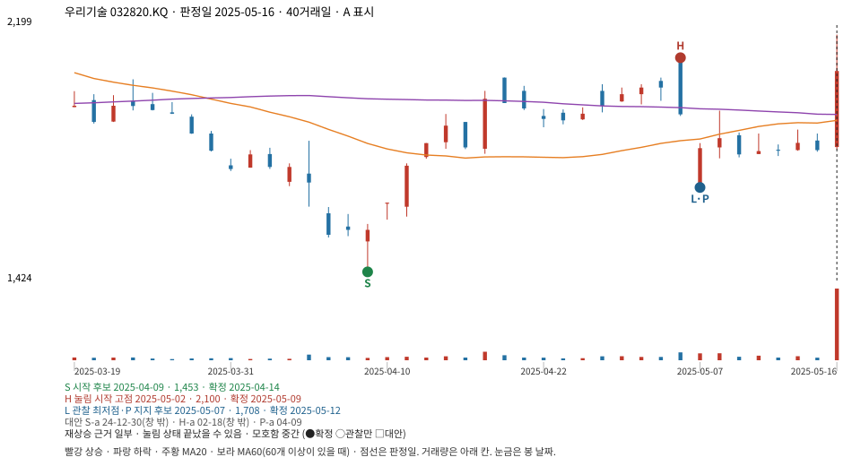
코드 대조 (A 고정 뒤 작성) · 구조는 맞으나 목표/손익비로 제외
표본 구분: 눌림 자체 상태가 탈락(rejected_rr) · 눌림 자체 상태: rejected_rr (확인 후 손익비 탈락) · 그날 최종 상태: rejected_rr · 최종 계획 패턴: trend_pullback
공통 차단 사유: 없음 · 눌림 자체 차단: 없음
구간 시작 좌표: 명시적 시작 좌표 없음 (패키지 기록: pullback_start=unrecorded)
| 코드 창 | 기간 | 창 안 극값 | A 표시와 비교 |
|---|---|---|---|
| 목표 기준(마지막 봉 제외 20봉) | 2025-04-15 ~ 2025-05-15 (20봉) | 최고 2025-05-02 · 2,100 | A의 H와 같은 날 |
| 손절 기준(최근 10봉) | 2025-04-30 ~ 2025-05-16 (10봉) | 최저 2025-05-07 · 1,708 | A의 L과 같은 날 |
| 추세 비교: 최근 20봉 | 2025-04-16 ~ 2025-05-16 (20봉) | 최고 2025-05-16 · 2,170 | A의 H 2025-05-02는 이 창 안: 예 |
| 추세 비교: 직전 20봉 | 2025-03-19 ~ 2025-04-15 (20봉) | 최저 2025-04-09 · 1,453 | A의 S 2025-04-09는 최근 40봉 안: 예 |
| 근접 확인(판정일 직전 5봉) | 2025-05-09 ~ 2025-05-15 (5봉) | 최저 2025-05-09 · 1,799 | MA20+0.75ATR 이하인지 보는 창 |
| 거래량 확인 | 2025-05-13 ~ 2025-05-15 (3봉) vs 2025-04-10 ~ 2025-05-12 (20봉) | 비율 0.743 | 코드 기준 0.85 미만이면 감소로 봄 |
눌림 코드 게이트: rising_structure=예 · atr_valid=예 · valid_zone=예 · near_ma20=예 · volume_contracted=예 · recovery_close=예 · bullish_candle=예 · volume_recovery=예 · fresh_confirmation=예
저장된 값(가격 수준): 진입 2060 · 손절 1686 · 목표 2100 · 손익비 0.107 · 후보 구간 1868~1953
| 돌파와 목표의 관계 (세 항목은 따로 계산) | ||
|---|---|---|
| A의 H 2025-05-02 · 2,100 고가 돌파 | 판정일 예 | H 이후 처음 2025-05-16 |
| A의 H 종가 돌파 | 판정일 아니오 | H 이후 처음 없음 |
| 목표 기준 2025-05-02 · 2,100 (판정일 제외 20봉 최고) | 판정일 고가 초과 예 | 판정일 종가 초과 아니오 |
| 목표가 ≤ 진입 기준: 목표 2,100 / 저장된 진입가 2,060 | 아니오 저장된 진입가와 목표가를 비교한 값 | |
- 판정일 고가 2,170가 목표 기준 최고 2,100를 넘었다(고가 돌파).
- 종가 2,060는 목표 기준 아래라 목표가 진입가보다 높다. 고가 돌파만으로 목표가 진입가 이하가 되지 않는다.
- A의 H 2025-05-02 이후 고가 돌파 2025-05-16 · 종가 돌파 없음.
- A는 눌림이 끝났을 수 있다고 읽었다.
추가 검토 (B 확인 뒤, 블라인드 아님) · 큰 조정 시작 고점과 최근 재하락 시작 고점
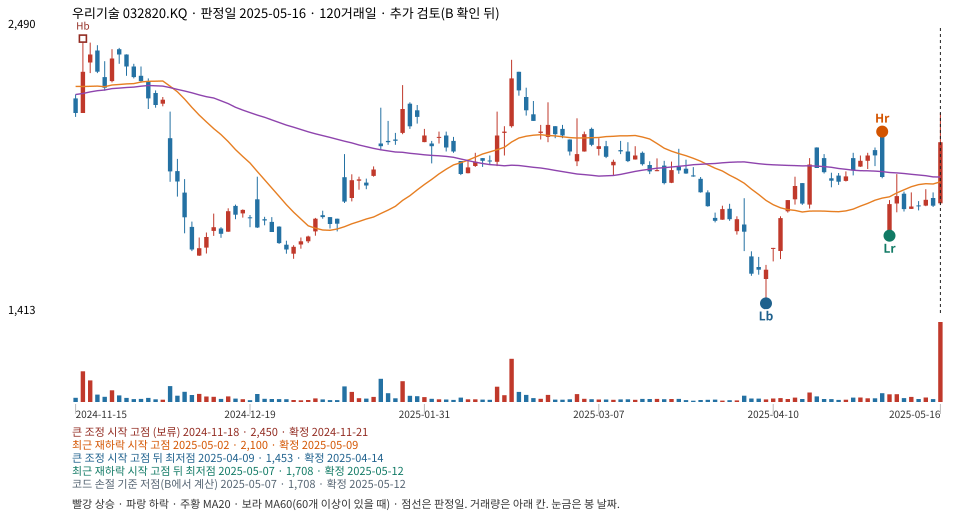
| 구분 | 상태 | 날짜 | 가격 | 확정 | 읽은 이유 |
|---|---|---|---|---|---|
| 큰 조정 시작 고점 (H_big) | 보류 | 2024-11-18 | 2,450 | 확정 2024-11-21 | 창 최고(2024년 11월 18일)가 창의 첫 5봉 안이라 창 밖이 더 높을 수 있다. 후보는 이 날짜이고, 같은 하락의 2월 18일 고점 2,370도 있다 |
| 최근 재하락 시작 고점 (H_recent) | 표시 | 2025-05-02 | 2,100 | 확정 2025-05-09 | 5월 2일의 확정 피벗 고점에서 5월 7일까지 재하락. 판정일 고가가 이 고점을 넘었으나 종가는 넘지 못했다 |
| H_big 뒤 최저점 | 보류 | 2025-04-09 | 1,453 | 확정 2025-04-14 | 계산값 |
| H_recent 뒤 최저점 | 표시 | 2025-05-07 | 1,708 | 확정 2025-05-12 | 계산값 |
| 코드 손절 기준 저점(B) | - | 2025-05-07 | 1,708 | - | 창 2025-04-30 ~ 2025-05-16 |
재비교 (참고: 이 사례는 손절 기준 저점이 A의 L과 같았다): 최근 재하락 저점과 일치 (보류 또는 없음 후보를 포함한 비교)
8. 테크윙 089030.KQ · 판정일 2024-10-31 · 0628c0298c8155ce
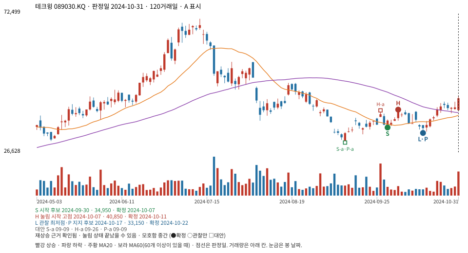
| 표시 | 날짜 | 가격 | 관찰 가능 시점 | 확정 | 읽은 이유 |
|---|---|---|---|---|---|
| S 시작 후보 | 2024-09-30 | 34,950 | 2024-09-30 마감 | 확정 2024-10-07 | H보다 앞선 가장 가까운 확정 저점 |
| S-a 대안 | 2024-09-09 | 30,000 | 2024-09-09 마감 | 확정 2024-09-12 | 70,800에서 내려온 더 큰 하락의 바닥 |
| H 눌림 시작 고점 | 2024-10-07 | 40,850 | 2024-10-07 마감 | 확정 2024-10-11 | 끝난 마지막 눌림의 고점. 판정일에 이 위의 새 고점이 나왔다 |
| H-a 대안 | 2024-09-26 | 40,600 | 2024-09-26 마감 | 확정 2024-10-02 | 조금 낮은 앞선 고점 |
| L 관찰 최저점 | 2024-10-17 | 33,150 | 2024-10-17 마감 | 확정 2024-10-22 | H 다음 봉부터 판정일까지의 가장 낮은 저가. 도구가 계산한 값이다 |
| P 지지 후보 | 2024-10-17 | 33,150 | 2024-10-17 마감 | 확정 2024-10-22 | 눌림 최저점 |
| P-a 대안 | 2024-09-09 | 30,000 | 2024-09-09 마감 | 확정 2024-09-12 | 하락의 바닥 |
재상승 근거 (확인됨): 가격이 눌림의 고점을 넘었다
2024-10-23 · 종가 40,950이 H 고가 40,850 위
2024-10-31 · 고가 45,500은 이번 반등의 신고가
모호한 점 (중간): 창 안에 70,800에서 30,000으로 내린 큰 하락이 있어, 이 상승은 확립된 상승 추세가 아니라 반등이다
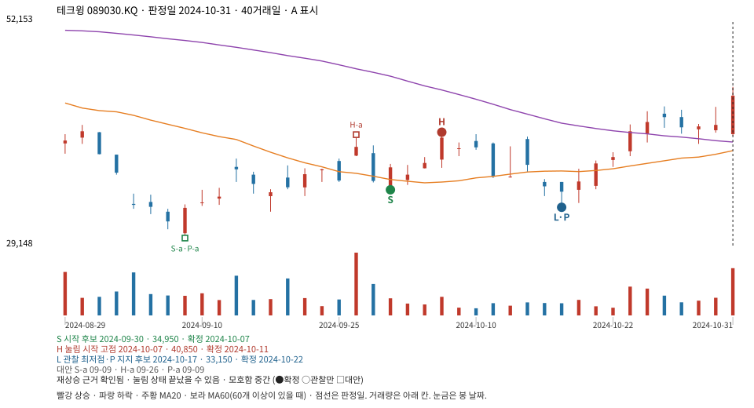
코드 대조 (A 고정 뒤 작성) · 구간이 다름
표본 구분: 눌림 자체 상태가 대기 · 눌림 자체 상태: await_confirmation (반등 확인 대기) · 그날 최종 상태: context_wait · 최종 계획 패턴: trend_pullback
공통 차단 사유: context_wait · 눌림 자체 차단: context_wait
구간 시작 좌표: 명시적 시작 좌표 없음 (패키지 기록: pullback_start=unrecorded)
| 코드 창 | 기간 | 창 안 극값 | A 표시와 비교 |
|---|---|---|---|
| 목표 기준(마지막 봉 제외 20봉) | 2024-09-30 ~ 2024-10-30 (20봉) | 최고 2024-10-25 · 43,500 | A의 H 2024-10-07 · 40,850와 다름 |
| 손절 기준(최근 10봉) | 2024-10-18 ~ 2024-10-31 (10봉) | 최저 2024-10-18 · 33,600 | A의 L 2024-10-17 · 33,150와 다름 · A의 L이 창 밖 |
| 추세 비교: 최근 20봉 | 2024-10-02 ~ 2024-10-31 (20봉) | 최고 2024-10-31 · 45,500 | A의 H 2024-10-07는 이 창 안: 예 |
| 추세 비교: 직전 20봉 | 2024-08-29 ~ 2024-09-30 (20봉) | 최저 2024-09-09 · 30,000 | A의 S 2024-09-30는 최근 40봉 안: 예 |
| 근접 확인(판정일 직전 5봉) | 2024-10-24 ~ 2024-10-30 (5봉) | 최저 2024-10-29 · 39,650 | MA20+0.75ATR 이하인지 보는 창 |
| 거래량 확인 | 2024-10-28 ~ 2024-10-30 (3봉) vs 2024-09-25 ~ 2024-10-25 (20봉) | 비율 0.865 | 코드 기준 0.85 미만이면 감소로 봄 |
눌림 코드 게이트: rising_structure=예 · atr_valid=예 · valid_zone=예 · near_ma20=예 · volume_contracted=아니오 · recovery_close=예 · bullish_candle=예 · volume_recovery=예 · fresh_confirmation=예
저장된 값(가격 수준): 진입 - · 손절 33000 · 목표 43500 · 손익비 - · 후보 구간 37758~40156
| 돌파와 목표의 관계 (세 항목은 따로 계산) | ||
|---|---|---|
| A의 H 2024-10-07 · 40,850 고가 돌파 | 판정일 예 | H 이후 처음 2024-10-23 |
| A의 H 종가 돌파 | 판정일 예 | H 이후 처음 2024-10-23 |
| 목표 기준 2024-10-25 · 43,500 (판정일 제외 20봉 최고) | 판정일 고가 초과 예 | 판정일 종가 초과 예 |
| 목표가 ≤ 진입 기준: 목표 43,500 / 당일 종가(실제 진입 계획 없음) 44,600 | 예 실제 진입 계획이 없어 당일 종가(소수점 버림)와 후보 목표가를 비교한 값 | |
- 목표 기준 고점 2024-10-25(43,500)은 A의 H 2024-10-07(40,850)와 날짜가 다르다.
- 손절 기준 저점 2024-10-18(33,600)은 A의 L 2024-10-17(33,150)와 날짜가 다르다.
- A의 L 2024-10-17은 코드의 손절 기준 창(최근 10봉, 2024-10-18부터) 밖이다. 창이 눌림 구간보다 짧다.
- 판정일 고가 45,500가 목표 기준 최고 43,500를 넘었다(고가 돌파).
- 목표가 43,500가 당일 종가(실제 진입 계획 없음) 44,600 이하이다. 종가가 목표 기준 이상인 경우다.
- A의 H 2024-10-07 이후 고가 돌파 2024-10-23 · 종가 돌파 2024-10-23.
- 공통 차단 사유: context_wait → 최종 상태 context_wait.
- A는 눌림이 끝났을 수 있다고 읽었다.
태그: common_risk_block, target_ref_not_A_H, stop_ref_not_A_L
추가 검토 (B 확인 뒤, 블라인드 아님) · 큰 조정 시작 고점과 최근 재하락 시작 고점 · 손절 기준 재비교 대상
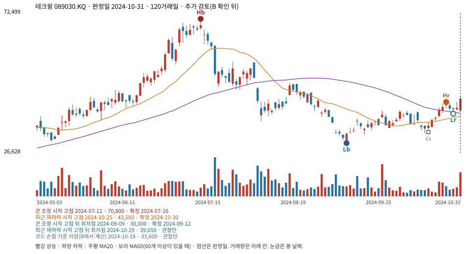
| 구분 | 상태 | 날짜 | 가격 | 확정 | 읽은 이유 |
|---|---|---|---|---|---|
| 큰 조정 시작 고점 (H_big) | 표시 | 2024-07-11 | 70,800 | 확정 2024-07-16 | 창 최고는 7월 11일 70,800. 9월 9일까지 약 58% 내려 큰 하락이었고, 현재 상승은 그 뒤의 반등이다. 중간에 낮아지는 고점이 여러 개라 시작 고점이 7월 11일보다 늦다고 볼 여지도 있다 |
| 최근 재하락 시작 고점 (H_recent) | 표시 | 2024-10-25 | 43,500 | 확정 2024-10-30 | 10월 25일의 확정 피벗 고점에서 10월 29일까지 재하락. 판정일 고가와 종가가 이 고점을 넘었다 |
| H_big 뒤 최저점 | 표시 | 2024-09-09 | 30,000 | 확정 2024-09-12 | 계산값 |
| H_recent 뒤 최저점 | 표시 | 2024-10-29 | 39,650 | 관찰만 · 판정일까지 오른쪽 완료 봉이 3개 미만 | 계산값 |
| 코드 손절 기준 저점(B) | - | 2024-10-18 | 33,600 | - | 창 2024-10-18 ~ 2024-10-31 |
재비교: 코드 기준 저점이 최근 재하락 시작 고점보다 앞
9. NAVER 035420.KS · 판정일 2024-11-04 · 065da101de4d728c
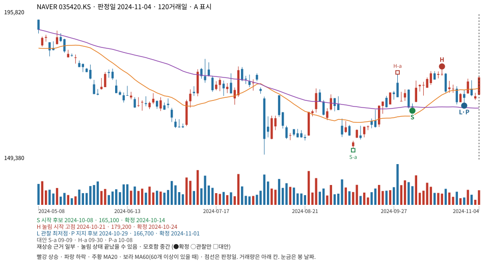
| 표시 | 날짜 | 가격 | 관찰 가능 시점 | 확정 | 읽은 이유 |
|---|---|---|---|---|---|
| S 시작 후보 | 2024-10-08 | 165,100 | 2024-10-08 마감 | 확정 2024-10-14 | H보다 앞선 가장 가까운 확정 저점 |
| S-a 대안 | 2024-09-09 | 152,500 | 2024-09-09 마감 | 확정 2024-09-12 | 앞선 스윙의 저점 |
| H 눌림 시작 고점 | 2024-10-21 | 179,200 | 2024-10-21 마감 | 확정 2024-10-24 | 10월 말 하락 직전의 최근 스윙 고점 |
| H-a 대안 | 2024-09-30 | 177,300 | 2024-09-30 마감 | 확정 2024-10-07 | 앞선 더 낮은 고점 |
| L 관찰 최저점 | 2024-10-29 | 166,700 | 2024-10-29 마감 | 확정 2024-11-01 | H 다음 봉부터 판정일까지의 가장 낮은 저가. 도구가 계산한 값이다 |
| P 지지 후보 | 2024-10-29 | 166,700 | 2024-10-29 마감 | 확정 2024-11-01 | 하락 최저점 |
| P-a 대안 | 2024-10-08 | 165,100 | 2024-10-08 마감 | 확정 2024-10-14 | 앞선 스윙 저점 |
재상승 근거 (일부): 하락 대부분을 되돌렸지만 H 고가 179,200 아래
2024-11-04 · 종가 175,700이 10월 22일 이후 모든 종가 위
모호한 점 (중간): 15만~18만 사이 횡보이고 60일 평균이 내려간다
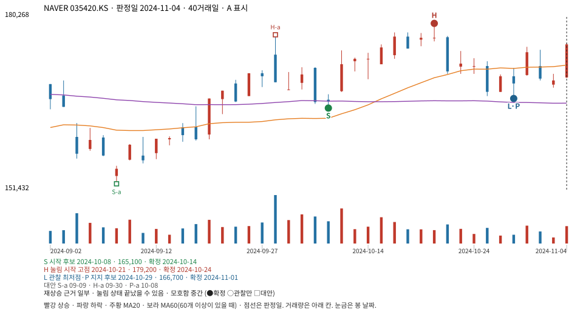
코드 대조 (A 고정 뒤 작성) · 구조는 맞으나 목표/손익비로 제외
표본 구분: 눌림 자체 상태가 탈락(rejected_rr) · 눌림 자체 상태: rejected_rr (확인 후 손익비 탈락) · 그날 최종 상태: rejected_rr · 최종 계획 패턴: trend_pullback
공통 차단 사유: 없음 · 눌림 자체 차단: 없음
구간 시작 좌표: 명시적 시작 좌표 없음 (패키지 기록: pullback_start=unrecorded)
| 코드 창 | 기간 | 창 안 극값 | A 표시와 비교 |
|---|---|---|---|
| 목표 기준(마지막 봉 제외 20봉) | 2024-10-04 ~ 2024-11-01 (20봉) | 최고 2024-10-21 · 179,200 | A의 H와 같은 날 |
| 손절 기준(최근 10봉) | 2024-10-22 ~ 2024-11-04 (10봉) | 최저 2024-10-29 · 166,700 | A의 L과 같은 날 |
| 추세 비교: 최근 20봉 | 2024-10-07 ~ 2024-11-04 (20봉) | 최고 2024-10-21 · 179,200 | A의 H 2024-10-21는 이 창 안: 예 |
| 추세 비교: 직전 20봉 | 2024-09-02 ~ 2024-10-04 (20봉) | 최저 2024-09-09 · 152,500 | A의 S 2024-10-08는 최근 40봉 안: 예 |
| 근접 확인(판정일 직전 5봉) | 2024-10-28 ~ 2024-11-01 (5봉) | 최저 2024-10-29 · 166,700 | MA20+0.75ATR 이하인지 보는 창 |
| 거래량 확인 | 2024-10-30 ~ 2024-11-01 (3봉) vs 2024-09-27 ~ 2024-10-29 (20봉) | 비율 0.596 | 코드 기준 0.85 미만이면 감소로 봄 |
눌림 코드 게이트: rising_structure=예 · atr_valid=예 · valid_zone=예 · near_ma20=예 · volume_contracted=예 · recovery_close=예 · bullish_candle=예 · volume_recovery=예 · fresh_confirmation=예
저장된 값(가격 수준): 진입 175700 · 손절 165858 · 목표 179200 · 손익비 0.356 · 후보 구간 170572~173937
| 돌파와 목표의 관계 (세 항목은 따로 계산) | ||
|---|---|---|
| A의 H 2024-10-21 · 179,200 고가 돌파 | 판정일 아니오 | H 이후 처음 없음 |
| A의 H 종가 돌파 | 판정일 아니오 | H 이후 처음 없음 |
| 목표 기준 2024-10-21 · 179,200 (판정일 제외 20봉 최고) | 판정일 고가 초과 아니오 | 판정일 종가 초과 아니오 |
| 목표가 ≤ 진입 기준: 목표 179,200 / 저장된 진입가 175,700 | 아니오 저장된 진입가와 목표가를 비교한 값 | |
- A는 눌림이 끝났을 수 있다고 읽었다.
추가 검토 (B 확인 뒤, 블라인드 아님) · 큰 조정 시작 고점과 최근 재하락 시작 고점
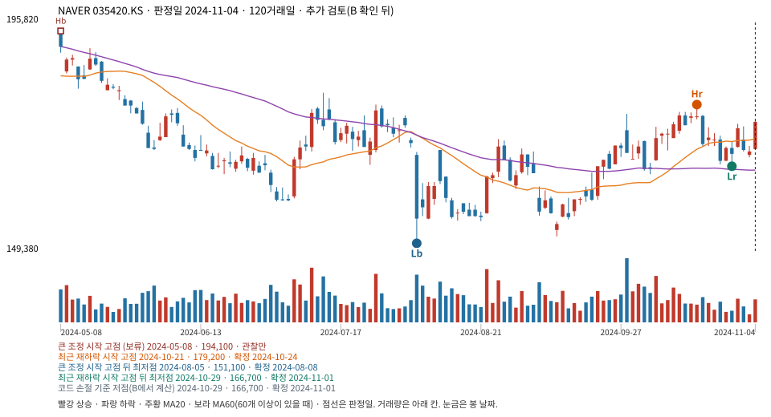
| 구분 | 상태 | 날짜 | 가격 | 확정 | 읽은 이유 |
|---|---|---|---|---|---|
| 큰 조정 시작 고점 (H_big) | 보류 | 2024-05-08 | 194,100 | 관찰만 · 3봉 안에 같거나 더 극단적인 봉이 있음 | 창 최고(5월 8일)가 창의 첫 5봉 안이다. 그 뒤 낮아지는 고점(5월 23일 183,000, 7월 12일 181,600, 7월 15일 180,500)이 이어져 시작 고점을 하나로 정할 수 없다 |
| 최근 재하락 시작 고점 (H_recent) | 표시 | 2024-10-21 | 179,200 | 확정 2024-10-24 | 10월 21일의 확정 피벗 고점에서 10월 29일까지 재하락 |
| H_big 뒤 최저점 | 보류 | 2024-08-05 | 151,100 | 확정 2024-08-08 | 계산값 |
| H_recent 뒤 최저점 | 표시 | 2024-10-29 | 166,700 | 확정 2024-11-01 | 계산값 |
| 코드 손절 기준 저점(B) | - | 2024-10-29 | 166,700 | - | 창 2024-10-22 ~ 2024-11-04 |
재비교 (참고: 이 사례는 손절 기준 저점이 A의 L과 같았다): 최근 재하락 저점과 일치 (보류 또는 없음 후보를 포함한 비교)
10. LS ELECTRIC 010120.KS · 판정일 2026-04-21 · 0661fe259966d89d
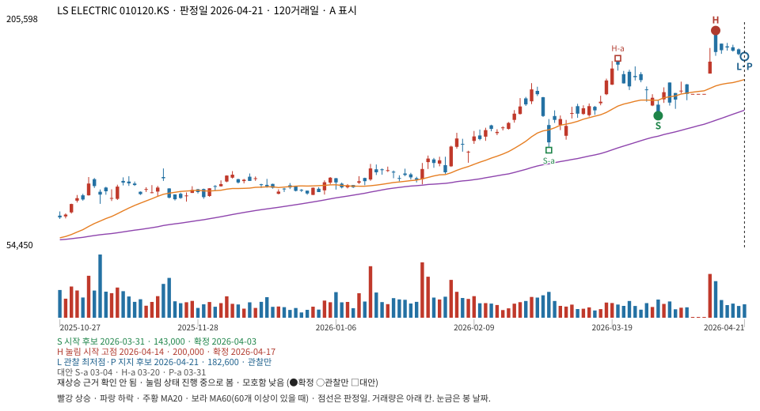
| 표시 | 날짜 | 가격 | 관찰 가능 시점 | 확정 | 읽은 이유 |
|---|---|---|---|---|---|
| S 시작 후보 | 2026-03-31 | 143,000 | 2026-03-31 마감 | 확정 2026-04-03 | H보다 앞선 가장 가까운 확정 저점 |
| S-a 대안 | 2026-03-04 | 120,000 | 2026-03-04 마감 | 확정 2026-03-09 | 앞선 바닥 저점 |
| H 눌림 시작 고점 | 2026-04-14 | 200,000 | 2026-04-14 마감 | 확정 2026-04-17 | 4월 상승의 정점 |
| H-a 대안 | 2026-03-20 | 181,400 | 2026-03-20 마감 | 확정 2026-03-25 | 앞선 더 낮은 정점 |
| L 관찰 최저점 | 2026-04-21 | 182,600 | 2026-04-21 마감 | 관찰만 · 판정일까지 오른쪽 완료 봉이 3개 미만 | H 다음 봉부터 판정일까지의 가장 낮은 저가. 도구가 계산한 값이다 |
| P 지지 후보 | 2026-04-21 | 182,600 | 2026-04-21 마감 | 관찰만 · 판정일까지 오른쪽 완료 봉이 3개 미만 | 판정일 저가 |
| P-a 대안 | 2026-03-31 | 143,000 | 2026-03-31 마감 | 확정 2026-04-03 | 마지막 확정 저점 |
재상승 근거 (확인 안 됨): 4월 14일 뒤 저가가 하루씩 내려가고 최저점이 판정일이다
모호한 점 (낮음): 뚜렷한 상승 추세와 얕은 하락 하나
자료 메모: 120일 창에 거래량 0인 봉 3개: 2026-04-08, 2026-04-09, 2026-04-10 / 2026-04-08~04-10 세 거래일은 거래량 0, 가격 동일이다. 거래 정지로 보이나 파일만으로 확인하지 못했다.
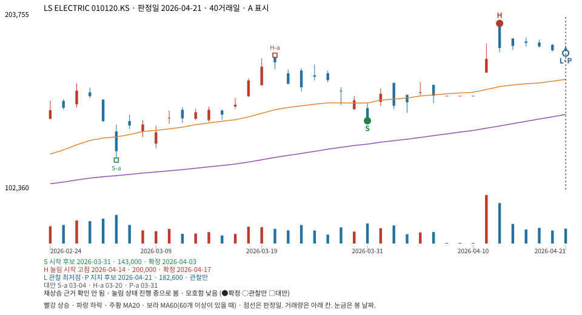
코드 대조 (A 고정 뒤 작성) · 자료 한계
표본 구분: 눌림 자체 상태가 대기 · 눌림 자체 상태: wait_pullback (눌림 대기) · 그날 최종 상태: wait_pullback · 최종 계획 패턴: trend_pullback
공통 차단 사유: 없음 · 눌림 자체 차단: 없음
구간 시작 좌표: 명시적 시작 좌표 없음 (패키지 기록: pullback_start=unrecorded)
| 코드 창 | 기간 | 창 안 극값 | A 표시와 비교 |
|---|---|---|---|
| 목표 기준(마지막 봉 제외 20봉) | 2026-03-24 ~ 2026-04-20 (20봉) | 최고 2026-04-14 · 200,000 | A의 H와 같은 날 |
| 손절 기준(최근 10봉) | 2026-04-08 ~ 2026-04-21 (10봉) | 최저 2026-04-08 · 157,600 | A의 L 2026-04-21 · 182,600와 다름 · A의 H보다 앞 |
| 추세 비교: 최근 20봉 | 2026-03-25 ~ 2026-04-21 (20봉) | 최고 2026-04-14 · 200,000 | A의 H 2026-04-14는 이 창 안: 예 |
| 추세 비교: 직전 20봉 | 2026-02-24 ~ 2026-03-24 (20봉) | 최저 2026-03-04 · 120,000 | A의 S 2026-03-31는 최근 40봉 안: 예 |
| 근접 확인(판정일 직전 5봉) | 2026-04-14 ~ 2026-04-20 (5봉) | 최저 2026-04-14 · 183,100 | MA20+0.75ATR 이하인지 보는 창 |
| 거래량 확인 | 2026-04-16 ~ 2026-04-20 (3봉) vs 2026-03-19 ~ 2026-04-15 (20봉) | 비율 0.929 | 코드 기준 0.85 미만이면 감소로 봄 |
눌림 코드 게이트: rising_structure=예 · atr_valid=예 · valid_zone=예 · near_ma20=아니오 · volume_contracted=아니오 · recovery_close=아니오 · bullish_candle=아니오 · volume_recovery=예 · fresh_confirmation=예
저장된 값(가격 수준): 진입 - · 손절 155805 · 목표 200000 · 손익비 - · 후보 구간 163641~170818
| 돌파와 목표의 관계 (세 항목은 따로 계산) | ||
|---|---|---|
| A의 H 2026-04-14 · 200,000 고가 돌파 | 판정일 아니오 | H 이후 처음 없음 |
| A의 H 종가 돌파 | 판정일 아니오 | H 이후 처음 없음 |
| 목표 기준 2026-04-14 · 200,000 (판정일 제외 20봉 최고) | 판정일 고가 초과 아니오 | 판정일 종가 초과 아니오 |
| 목표가 ≤ 진입 기준: 목표 200,000 / 당일 종가(실제 진입 계획 없음) 184,700 | 아니오 실제 진입 계획이 없어 당일 종가(소수점 버림)와 후보 목표가를 비교한 값 | |
- 손절 기준 저점 2026-04-08(157,600)은 A의 L 2026-04-21(182,600)와 날짜가 다르다.
- 손절 기준 저점 2026-04-08은 A의 H 2026-04-14보다 앞이다. 코드의 10봉 창이 눌림이 아니라 그 앞의 상승 구간 저점을 잡았다.
- 손절 기준 봉 2026-04-08의 거래량이 0이다. 가격 파일 한계로 읽는다.
태그: stop_ref_not_A_L
추가 검토 (B 확인 뒤, 블라인드 아님) · 큰 조정 시작 고점과 최근 재하락 시작 고점 · 손절 기준 재비교 대상
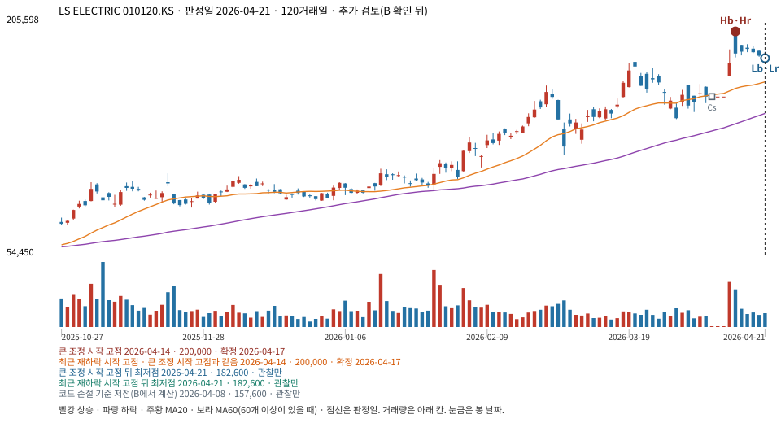
| 구분 | 상태 | 날짜 | 가격 | 확정 | 읽은 이유 |
|---|---|---|---|---|---|
| 큰 조정 시작 고점 (H_big) | 표시 | 2026-04-14 | 200,000 | 확정 2026-04-17 | 창 최고가 A의 H와 같다 |
| 최근 재하락 시작 고점 (H_recent) | 표시 · H_big과 같음 | 2026-04-14 | 200,000 | 확정 2026-04-17 | 재하락 갈래가 없어 H_big과 같다. 4월 8~10일 거래량 0 봉이 창 안에 있다 |
| H_big 뒤 최저점 | 표시 | 2026-04-21 | 182,600 | 관찰만 · 판정일까지 오른쪽 완료 봉이 3개 미만 | 계산값 |
| H_recent 뒤 최저점 | 표시 | 2026-04-21 | 182,600 | 관찰만 · 판정일까지 오른쪽 완료 봉이 3개 미만 | 계산값 |
| 코드 손절 기준 저점(B) | - | 2026-04-08 | 157,600 | - | 창 2026-04-08 ~ 2026-04-21 |
재비교: 코드 기준 저점이 최근 재하락 시작 고점보다 앞
11. 한빛레이저 452190.KQ · 판정일 2025-01-24 · 06e4c870056806ab
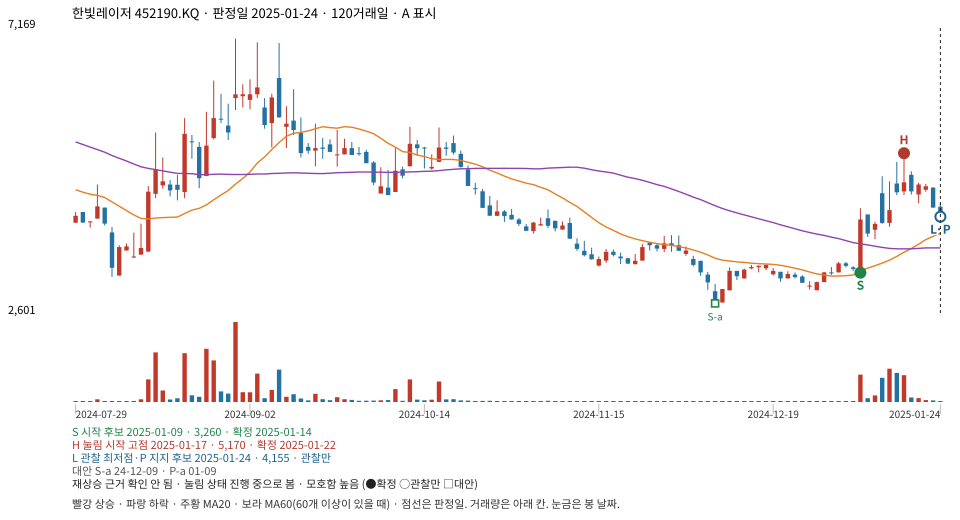
| 표시 | 날짜 | 가격 | 관찰 가능 시점 | 확정 | 읽은 이유 |
|---|---|---|---|---|---|
| S 시작 후보 | 2025-01-09 | 3,260 | 2025-01-09 마감 | 확정 2025-01-14 | H보다 앞선 가장 가까운 확정 저점 |
| S-a 대안 | 2024-12-09 | 2,770 | 2024-12-09 마감 | 확정 2024-12-12 | 전체 하락의 바닥 |
| H 눌림 시작 고점 | 2025-01-17 | 5,170 | 2025-01-17 마감 | 확정 2025-01-22 | 나흘 급등의 정점 |
| L 관찰 최저점 | 2025-01-24 | 4,155 | 2025-01-24 마감 | 관찰만 · 판정일까지 오른쪽 완료 봉이 3개 미만 | H 다음 봉부터 판정일까지의 가장 낮은 저가. 도구가 계산한 값이다 |
| P 지지 후보 | 2025-01-24 | 4,155 | 2025-01-24 마감 | 관찰만 · 판정일까지 오른쪽 완료 봉이 3개 미만 | 판정일 저가 |
| P-a 대안 | 2025-01-09 | 3,260 | 2025-01-09 마감 | 확정 2025-01-14 | 급등의 출발점 |
재상승 근거 (확인 안 됨): 급등 뒤 종가가 닷새 연속 낮아졌다
모호한 점 (높음): 120일 차트는 7,000에서 2,770으로 내려온 하락이 대부분이고 상승 구간은 나흘짜리 반등이다
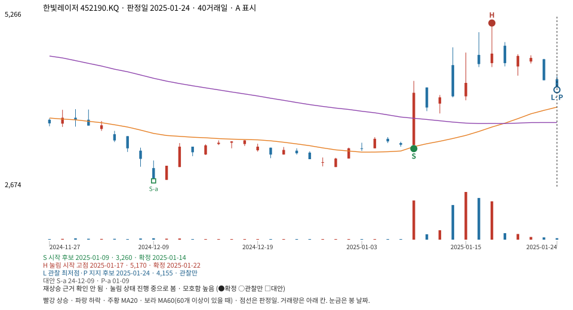
코드 대조 (A 고정 뒤 작성) · 차트가 모호
표본 구분: 눌림 자체 상태가 대기 · 눌림 자체 상태: wait_pullback (눌림 대기) · 그날 최종 상태: risk_blocked · 최종 계획 패턴: trend_pullback
공통 차단 사유: spike_dump · 눌림 자체 차단: spike_dump
구간 시작 좌표: 명시적 시작 좌표 없음 (패키지 기록: pullback_start=unrecorded)
| 코드 창 | 기간 | 창 안 극값 | A 표시와 비교 |
|---|---|---|---|
| 목표 기준(마지막 봉 제외 20봉) | 2024-12-24 ~ 2025-01-23 (20봉) | 최고 2025-01-17 · 5,170 | A의 H와 같은 날 |
| 손절 기준(최근 10봉) | 2025-01-13 ~ 2025-01-24 (10봉) | 최저 2025-01-13 · 3,795 | A의 L 2025-01-24 · 4,155와 다름 · A의 H보다 앞 |
| 추세 비교: 최근 20봉 | 2024-12-26 ~ 2025-01-24 (20봉) | 최고 2025-01-17 · 5,170 | A의 H 2025-01-17는 이 창 안: 예 |
| 추세 비교: 직전 20봉 | 2024-11-27 ~ 2024-12-24 (20봉) | 최저 2024-12-09 · 2,770 | A의 S 2025-01-09는 최근 40봉 안: 예 |
| 근접 확인(판정일 직전 5봉) | 2025-01-17 ~ 2025-01-23 (5봉) | 최저 2025-01-23 · 4,300 | MA20+0.75ATR 이하인지 보는 창 |
| 거래량 확인 | 2025-01-21 ~ 2025-01-23 (3봉) vs 2024-12-19 ~ 2025-01-20 (20봉) | 비율 0.313 | 코드 기준 0.85 미만이면 감소로 봄 |
눌림 코드 게이트: rising_structure=예 · atr_valid=예 · valid_zone=예 · near_ma20=아니오 · volume_contracted=예 · recovery_close=아니오 · bullish_candle=아니오 · volume_recovery=아니오 · fresh_confirmation=예
저장된 값(가격 수준): 진입 - · 손절 3707 · 목표 5170 · 손익비 - · 후보 구간 3716~4066
| 돌파와 목표의 관계 (세 항목은 따로 계산) | ||
|---|---|---|
| A의 H 2025-01-17 · 5,170 고가 돌파 | 판정일 아니오 | H 이후 처음 없음 |
| A의 H 종가 돌파 | 판정일 아니오 | H 이후 처음 없음 |
| 목표 기준 2025-01-17 · 5,170 (판정일 제외 20봉 최고) | 판정일 고가 초과 아니오 | 판정일 종가 초과 아니오 |
| 목표가 ≤ 진입 기준: 목표 5,170 / 당일 종가(실제 진입 계획 없음) 4,170 | 아니오 실제 진입 계획이 없어 당일 종가(소수점 버림)와 후보 목표가를 비교한 값 | |
- 손절 기준 저점 2025-01-13(3,795)은 A의 L 2025-01-24(4,155)와 날짜가 다르다.
- 손절 기준 저점 2025-01-13은 A의 H 2025-01-17보다 앞이다. 코드의 10봉 창이 눌림이 아니라 그 앞의 상승 구간 저점을 잡았다.
- 공통 차단 사유: spike_dump → 최종 상태 risk_blocked.
태그: common_risk_block, stop_ref_not_A_L
추가 검토 (B 확인 뒤, 블라인드 아님) · 큰 조정 시작 고점과 최근 재하락 시작 고점 · 손절 기준 재비교 대상
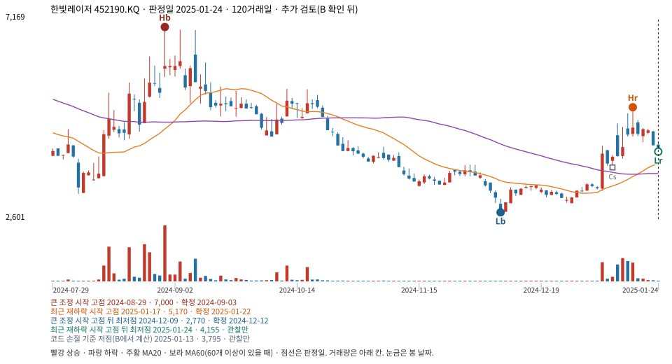
| 구분 | 상태 | 날짜 | 가격 | 확정 | 읽은 이유 |
|---|---|---|---|---|---|
| 큰 조정 시작 고점 (H_big) | 표시 | 2024-08-29 | 7,000 | 확정 2024-09-03 | 창 최고는 2024년 8월 29일 7,000. 12월 9일까지 약 60% 내렸고 현재 상승은 그 뒤의 반등이다 |
| 최근 재하락 시작 고점 (H_recent) | 표시 | 2025-01-17 | 5,170 | 확정 2025-01-22 | 1월 17일의 확정 피벗 고점에서 판정일까지 하락 |
| H_big 뒤 최저점 | 표시 | 2024-12-09 | 2,770 | 확정 2024-12-12 | 계산값 |
| H_recent 뒤 최저점 | 표시 | 2025-01-24 | 4,155 | 관찰만 · 판정일까지 오른쪽 완료 봉이 3개 미만 | 계산값 |
| 코드 손절 기준 저점(B) | - | 2025-01-13 | 3,795 | - | 창 2025-01-13 ~ 2025-01-24 |
재비교: 코드 기준 저점이 최근 재하락 시작 고점보다 앞
12. 아이씨티케이 456010.KQ · 판정일 2025-04-02 · 0792ac2403c954e1
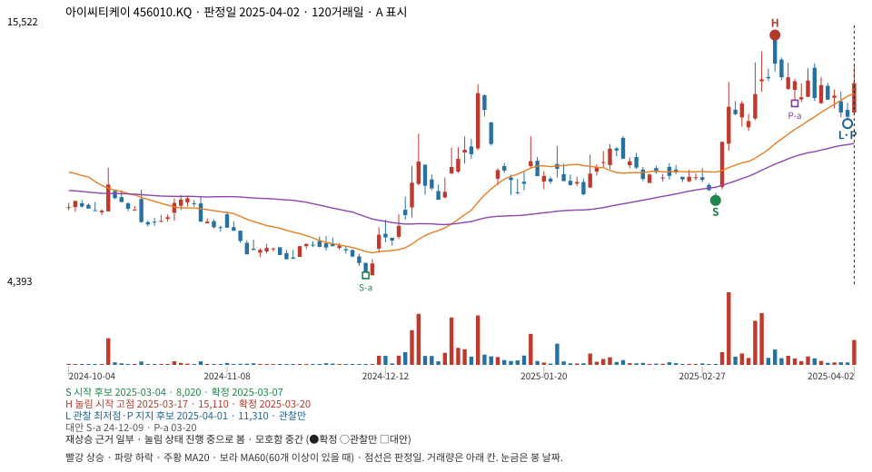
| 표시 | 날짜 | 가격 | 관찰 가능 시점 | 확정 | 읽은 이유 |
|---|---|---|---|---|---|
| S 시작 후보 | 2025-03-04 | 8,020 | 2025-03-04 마감 | 확정 2025-03-07 | H보다 앞선 가장 가까운 확정 저점 |
| S-a 대안 | 2024-12-09 | 4,805 | 2024-12-09 마감 | 확정 2024-12-12 | 더 큰 회복의 바닥 |
| H 눌림 시작 고점 | 2025-03-17 | 15,110 | 2025-03-17 마감 | 확정 2025-03-20 | 3월 상승의 정점 |
| L 관찰 최저점 | 2025-04-01 | 11,310 | 2025-04-01 마감 | 관찰만 · 판정일까지 오른쪽 완료 봉이 3개 미만 | H 다음 봉부터 판정일까지의 가장 낮은 저가. 도구가 계산한 값이다 |
| P 지지 후보 | 2025-04-01 | 11,310 | 2025-04-01 마감 | 관찰만 · 판정일까지 오른쪽 완료 봉이 3개 미만 | 판정일 하루 전 저점이라 확정되지 않음 |
| P-a 대안 | 2025-03-20 | 12,180 | 2025-03-20 마감 | 확정 2025-03-25 | H 뒤 첫 확정 저점 |
재상승 근거 (일부): 거래량이 큰 하루의 강세. H 고가에는 한참 못 미침
2025-04-02 · 종가 13,050이 직전 5일 종가와 20일 평균 위
모호한 점 (중간): 저점이 판정일 하루 전이라 확정되지 않았다
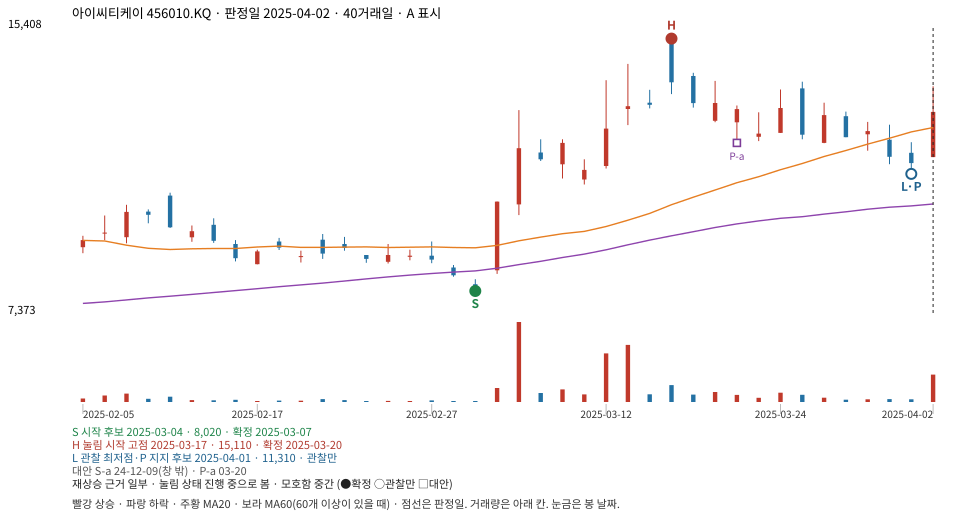
코드 대조 (A 고정 뒤 작성) · 구조는 맞으나 목표/손익비로 제외
표본 구분: 눌림 자체 상태가 탈락(rejected_rr) · 눌림 자체 상태: rejected_rr (확인 후 손익비 탈락) · 그날 최종 상태: risk_blocked · 최종 계획 패턴: trend_pullback
공통 차단 사유: top_collapse · 눌림 자체 차단: top_collapse
구간 시작 좌표: 명시적 시작 좌표 없음 (패키지 기록: pullback_start=unrecorded)
| 코드 창 | 기간 | 창 안 극값 | A 표시와 비교 |
|---|---|---|---|
| 목표 기준(마지막 봉 제외 20봉) | 2025-03-05 ~ 2025-04-01 (20봉) | 최고 2025-03-17 · 15,110 | A의 H와 같은 날 |
| 손절 기준(최근 10봉) | 2025-03-20 ~ 2025-04-02 (10봉) | 최저 2025-04-01 · 11,310 | A의 L과 같은 날 |
| 추세 비교: 최근 20봉 | 2025-03-06 ~ 2025-04-02 (20봉) | 최고 2025-03-17 · 15,110 | A의 H 2025-03-17는 이 창 안: 예 |
| 추세 비교: 직전 20봉 | 2025-02-05 ~ 2025-03-05 (20봉) | 최저 2025-03-04 · 8,020 | A의 S 2025-03-04는 최근 40봉 안: 예 |
| 근접 확인(판정일 직전 5봉) | 2025-03-26 ~ 2025-04-01 (5봉) | 최저 2025-04-01 · 11,310 | MA20+0.75ATR 이하인지 보는 창 |
| 거래량 확인 | 2025-03-28 ~ 2025-04-01 (3봉) vs 2025-02-27 ~ 2025-03-27 (20봉) | 비율 0.18 | 코드 기준 0.85 미만이면 감소로 봄 |
눌림 코드 게이트: rising_structure=예 · atr_valid=예 · valid_zone=예 · near_ma20=예 · volume_contracted=예 · recovery_close=예 · bullish_candle=예 · volume_recovery=예 · fresh_confirmation=예
저장된 값(가격 수준): 진입 13050 · 손절 11078 · 목표 15110 · 손익비 1.045 · 후보 구간 12149~13077
| 돌파와 목표의 관계 (세 항목은 따로 계산) | ||
|---|---|---|
| A의 H 2025-03-17 · 15,110 고가 돌파 | 판정일 아니오 | H 이후 처음 없음 |
| A의 H 종가 돌파 | 판정일 아니오 | H 이후 처음 없음 |
| 목표 기준 2025-03-17 · 15,110 (판정일 제외 20봉 최고) | 판정일 고가 초과 아니오 | 판정일 종가 초과 아니오 |
| 목표가 ≤ 진입 기준: 목표 15,110 / 저장된 진입가 13,050 | 아니오 저장된 진입가와 목표가를 비교한 값 | |
- 공통 차단 사유: top_collapse → 최종 상태 risk_blocked.
태그: common_risk_block
추가 검토 (B 확인 뒤, 블라인드 아님) · 큰 조정 시작 고점과 최근 재하락 시작 고점
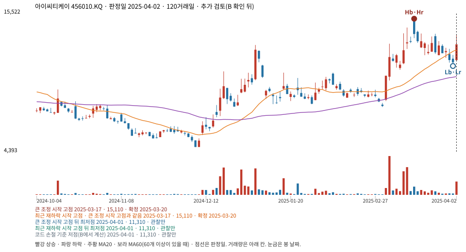
| 구분 | 상태 | 날짜 | 가격 | 확정 | 읽은 이유 |
|---|---|---|---|---|---|
| 큰 조정 시작 고점 (H_big) | 표시 | 2025-03-17 | 15,110 | 확정 2025-03-20 | 창 최고가 A의 H와 같다 |
| 최근 재하락 시작 고점 (H_recent) | 표시 · H_big과 같음 | 2025-03-17 | 15,110 | 확정 2025-03-20 | 재하락 갈래가 없어 H_big과 같다 |
| H_big 뒤 최저점 | 표시 | 2025-04-01 | 11,310 | 관찰만 · 판정일까지 오른쪽 완료 봉이 3개 미만 | 계산값 |
| H_recent 뒤 최저점 | 표시 | 2025-04-01 | 11,310 | 관찰만 · 판정일까지 오른쪽 완료 봉이 3개 미만 | 계산값 |
| 코드 손절 기준 저점(B) | - | 2025-04-01 | 11,310 | - | 창 2025-03-20 ~ 2025-04-02 |
재비교 (참고: 이 사례는 손절 기준 저점이 A의 L과 같았다): 두 고점 기준 저점이 같고 코드 기준과 일치
13. 두산퓨얼셀 336260.KS · 판정일 2025-09-10 · 19f9ea891800aab8
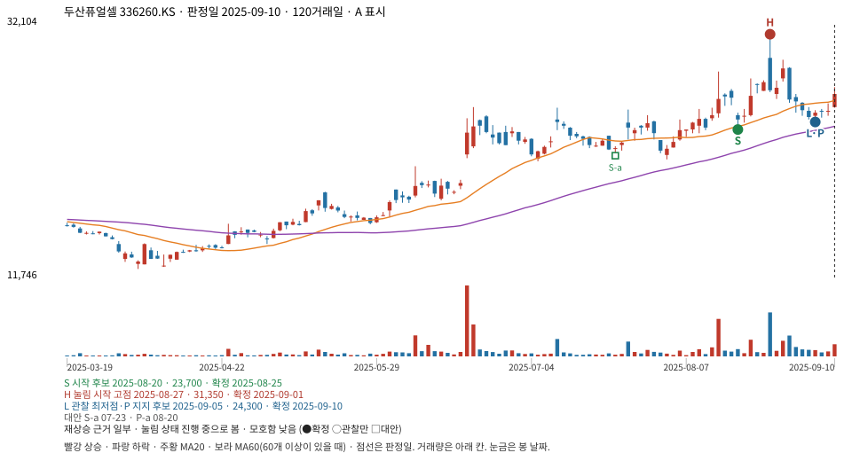
| 표시 | 날짜 | 가격 | 관찰 가능 시점 | 확정 | 읽은 이유 |
|---|---|---|---|---|---|
| S 시작 후보 | 2025-08-20 | 23,700 | 2025-08-20 마감 | 확정 2025-08-25 | H보다 앞선 가장 가까운 확정 저점 |
| S-a 대안 | 2025-07-23 | 21,600 | 2025-07-23 마감 | 확정 2025-07-28 | 같은 상승의 앞선 저점 |
| H 눌림 시작 고점 | 2025-08-27 | 31,350 | 2025-08-27 마감 | 확정 2025-09-01 | 8월 상승의 정점 |
| L 관찰 최저점 | 2025-09-05 | 24,300 | 2025-09-05 마감 | 확정 2025-09-10 | H 다음 봉부터 판정일까지의 가장 낮은 저가. 도구가 계산한 값이다 |
| P 지지 후보 | 2025-09-05 | 24,300 | 2025-09-05 마감 | 확정 2025-09-10 | 하락 최저점 |
| P-a 대안 | 2025-08-20 | 23,700 | 2025-08-20 마감 | 확정 2025-08-25 | H 앞의 마지막 확정 저점 |
재상승 근거 (일부): 하루의 반등. 8월 29일 종가 28,600 아래
2025-09-10 · 종가 26,550이 직전 4일 종가 위
모호한 점 (낮음): 뚜렷한 상승 추세와 얕은 하락
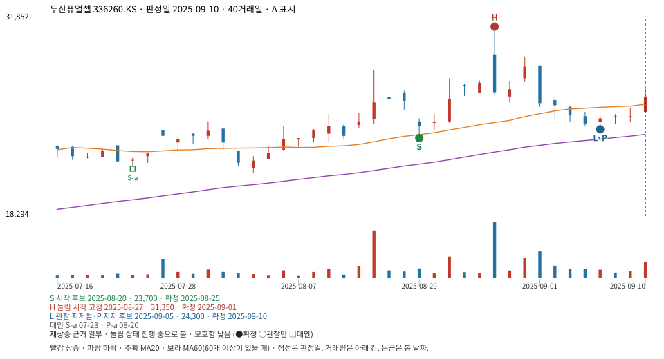
코드 대조 (A 고정 뒤 작성) · 일치
표본 구분: 눌림이 최종 선택 · 눌림 자체 상태: ready (준비) · 그날 최종 상태: ready · 최종 계획 패턴: trend_pullback
공통 차단 사유: 없음 · 눌림 자체 차단: 없음
구간 시작 좌표: 명시적 시작 좌표 없음 (패키지 기록: pullback_start=unrecorded)
| 코드 창 | 기간 | 창 안 극값 | A 표시와 비교 |
|---|---|---|---|
| 목표 기준(마지막 봉 제외 20봉) | 2025-08-12 ~ 2025-09-09 (20봉) | 최고 2025-08-27 · 31,350 | A의 H와 같은 날 |
| 손절 기준(최근 10봉) | 2025-08-28 ~ 2025-09-10 (10봉) | 최저 2025-09-05 · 24,300 | A의 L과 같은 날 |
| 추세 비교: 최근 20봉 | 2025-08-13 ~ 2025-09-10 (20봉) | 최고 2025-08-27 · 31,350 | A의 H 2025-08-27는 이 창 안: 예 |
| 추세 비교: 직전 20봉 | 2025-07-16 ~ 2025-08-12 (20봉) | 최저 2025-08-04 · 21,300 | A의 S 2025-08-20는 최근 40봉 안: 예 |
| 근접 확인(판정일 직전 5봉) | 2025-09-03 ~ 2025-09-09 (5봉) | 최저 2025-09-05 · 24,300 | MA20+0.75ATR 이하인지 보는 창 |
| 거래량 확인 | 2025-09-05 ~ 2025-09-09 (3봉) vs 2025-08-07 ~ 2025-09-04 (20봉) | 비율 0.469 | 코드 기준 0.85 미만이면 감소로 봄 |
눌림 코드 게이트: rising_structure=예 · atr_valid=예 · valid_zone=예 · near_ma20=예 · volume_contracted=예 · recovery_close=예 · bullish_candle=예 · volume_recovery=예 · fresh_confirmation=예
저장된 값(가격 수준): 진입 26550 · 손절 23952 · 목표 31350 · 손익비 1.848 · 후보 구간 25332~26722
| 돌파와 목표의 관계 (세 항목은 따로 계산) | ||
|---|---|---|
| A의 H 2025-08-27 · 31,350 고가 돌파 | 판정일 아니오 | H 이후 처음 없음 |
| A의 H 종가 돌파 | 판정일 아니오 | H 이후 처음 없음 |
| 목표 기준 2025-08-27 · 31,350 (판정일 제외 20봉 최고) | 판정일 고가 초과 아니오 | 판정일 종가 초과 아니오 |
| 목표가 ≤ 진입 기준: 목표 31,350 / 저장된 진입가 26,550 | 아니오 저장된 진입가와 목표가를 비교한 값 | |
추가 검토 (B 확인 뒤, 블라인드 아님) · 큰 조정 시작 고점과 최근 재하락 시작 고점
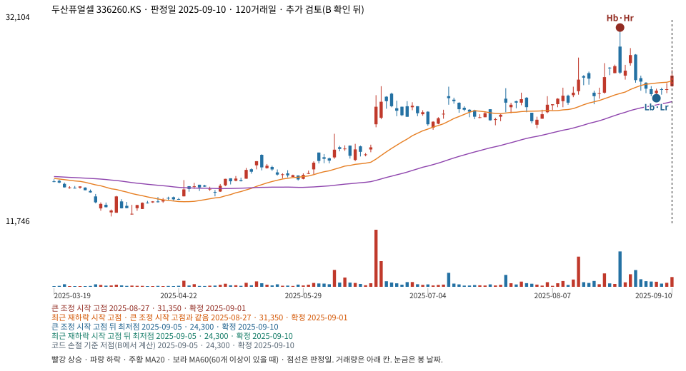
| 구분 | 상태 | 날짜 | 가격 | 확정 | 읽은 이유 |
|---|---|---|---|---|---|
| 큰 조정 시작 고점 (H_big) | 표시 | 2025-08-27 | 31,350 | 확정 2025-09-01 | 창 최고가 A의 H와 같다 |
| 최근 재하락 시작 고점 (H_recent) | 표시 · H_big과 같음 | 2025-08-27 | 31,350 | 확정 2025-09-01 | 재하락 갈래가 없어 H_big과 같다. 8월 29일에 낮아진 반등 고점이 있으나 확정 피벗이 아니다 |
| H_big 뒤 최저점 | 표시 | 2025-09-05 | 24,300 | 확정 2025-09-10 | 계산값 |
| H_recent 뒤 최저점 | 표시 | 2025-09-05 | 24,300 | 확정 2025-09-10 | 계산값 |
| 코드 손절 기준 저점(B) | - | 2025-09-05 | 24,300 | - | 창 2025-08-28 ~ 2025-09-10 |
재비교 (참고: 이 사례는 손절 기준 저점이 A의 L과 같았다): 두 고점 기준 저점이 같고 코드 기준과 일치
14. LG전자 066570.KS · 판정일 2026-03-18 · 2032f201c0c38f7f
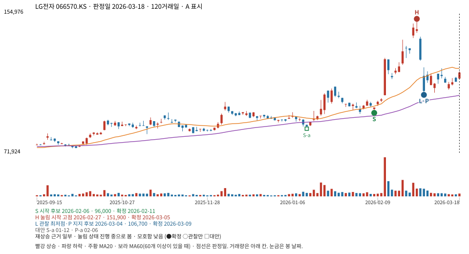
| 표시 | 날짜 | 가격 | 관찰 가능 시점 | 확정 | 읽은 이유 |
|---|---|---|---|---|---|
| S 시작 후보 | 2026-02-06 | 96,000 | 2026-02-06 마감 | 확정 2026-02-11 | H보다 앞선 가장 가까운 확정 저점 |
| S-a 대안 | 2026-01-12 | 86,600 | 2026-01-12 마감 | 확정 2026-01-15 | 첫 상승 계단 앞의 저점 |
| H 눌림 시작 고점 | 2026-02-27 | 151,900 | 2026-02-27 마감 | 확정 2026-03-05 | 2월 급등의 정점 |
| L 관찰 최저점 | 2026-03-04 | 106,700 | 2026-03-04 마감 | 확정 2026-03-09 | H 다음 봉부터 판정일까지의 가장 낮은 저가. 도구가 계산한 값이다 |
| P 지지 후보 | 2026-03-04 | 106,700 | 2026-03-04 마감 | 확정 2026-03-09 | 하락 최저점 |
| P-a 대안 | 2026-02-06 | 96,000 | 2026-02-06 마감 | 확정 2026-02-11 | 급등의 바닥 |
재상승 근거 (일부): 저점은 올라가지만 3월 11일 고점보다 고점이 낮다
2026-03-13 · 저가 109,800이 3월 4일 저가보다 높음
2026-03-18 · 종가 120,000이 직전 5일 종가 위
모호한 점 (낮음): 큰 급등과 뚜렷한 하락 하나
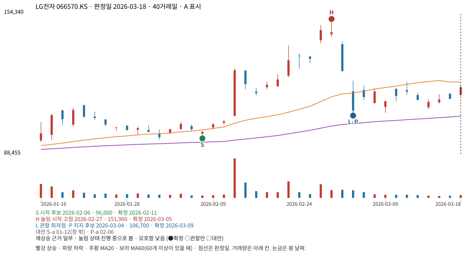
코드 대조 (A 고정 뒤 작성) · 구간이 다름
표본 구분: 눌림이 최종 선택 · 눌림 자체 상태: ready (준비) · 그날 최종 상태: ready · 최종 계획 패턴: trend_pullback
공통 차단 사유: 없음 · 눌림 자체 차단: 없음
구간 시작 좌표: 명시적 시작 좌표 없음 (패키지 기록: pullback_start=unrecorded)
| 코드 창 | 기간 | 창 안 극값 | A 표시와 비교 |
|---|---|---|---|
| 목표 기준(마지막 봉 제외 20봉) | 2026-02-12 ~ 2026-03-17 (20봉) | 최고 2026-02-27 · 151,900 | A의 H와 같은 날 |
| 손절 기준(최근 10봉) | 2026-03-05 ~ 2026-03-18 (10봉) | 최저 2026-03-09 · 108,000 | A의 L 2026-03-04 · 106,700와 다름 · A의 L이 창 밖 |
| 추세 비교: 최근 20봉 | 2026-02-13 ~ 2026-03-18 (20봉) | 최고 2026-02-27 · 151,900 | A의 H 2026-02-27는 이 창 안: 예 |
| 추세 비교: 직전 20봉 | 2026-01-16 ~ 2026-02-12 (20봉) | 최저 2026-01-16 · 94,300 | A의 S 2026-02-06는 최근 40봉 안: 예 |
| 근접 확인(판정일 직전 5봉) | 2026-03-11 ~ 2026-03-17 (5봉) | 최저 2026-03-13 · 109,800 | MA20+0.75ATR 이하인지 보는 창 |
| 거래량 확인 | 2026-03-13 ~ 2026-03-17 (3봉) vs 2026-02-09 ~ 2026-03-12 (20봉) | 비율 0.252 | 코드 기준 0.85 미만이면 감소로 봄 |
눌림 코드 게이트: rising_structure=예 · atr_valid=예 · valid_zone=예 · near_ma20=예 · volume_contracted=예 · recovery_close=예 · bullish_candle=예 · volume_recovery=예 · fresh_confirmation=예
저장된 값(가격 수준): 진입 120000 · 손절 106180 · 목표 151900 · 손익비 2.308 · 후보 구간 118745~126025
| 돌파와 목표의 관계 (세 항목은 따로 계산) | ||
|---|---|---|
| A의 H 2026-02-27 · 151,900 고가 돌파 | 판정일 아니오 | H 이후 처음 없음 |
| A의 H 종가 돌파 | 판정일 아니오 | H 이후 처음 없음 |
| 목표 기준 2026-02-27 · 151,900 (판정일 제외 20봉 최고) | 판정일 고가 초과 아니오 | 판정일 종가 초과 아니오 |
| 목표가 ≤ 진입 기준: 목표 151,900 / 저장된 진입가 120,000 | 아니오 저장된 진입가와 목표가를 비교한 값 | |
- 손절 기준 저점 2026-03-09(108,000)은 A의 L 2026-03-04(106,700)와 날짜가 다르다.
- A의 L 2026-03-04은 코드의 손절 기준 창(최근 10봉, 2026-03-05부터) 밖이다. 창이 눌림 구간보다 짧다.
태그: stop_ref_not_A_L
추가 검토 (B 확인 뒤, 블라인드 아님) · 큰 조정 시작 고점과 최근 재하락 시작 고점 · 손절 기준 재비교 대상
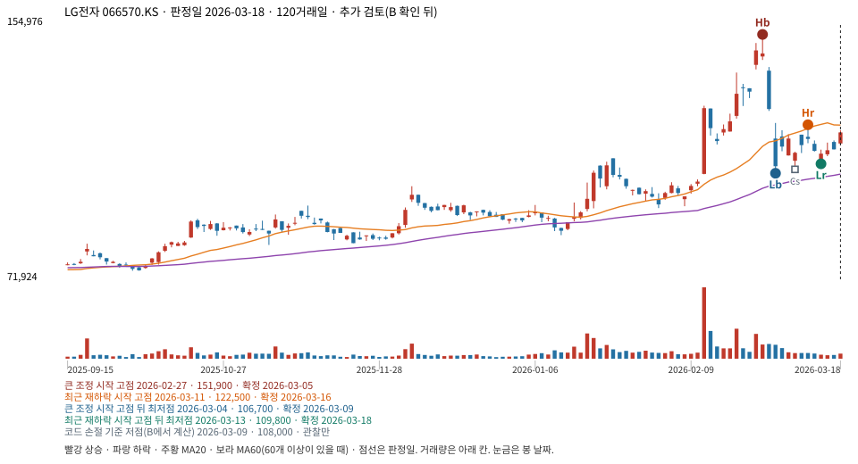
| 구분 | 상태 | 날짜 | 가격 | 확정 | 읽은 이유 |
|---|---|---|---|---|---|
| 큰 조정 시작 고점 (H_big) | 표시 | 2026-02-27 | 151,900 | 확정 2026-03-05 | 창 최고가 A의 H와 같다 |
| 최근 재하락 시작 고점 (H_recent) | 표시 | 2026-03-11 | 122,500 | 확정 2026-03-16 | 3월 4일 저점 뒤 반등한 3월 11일의 확정 피벗 고점에서 3월 13일까지 재하락 |
| H_big 뒤 최저점 | 표시 | 2026-03-04 | 106,700 | 확정 2026-03-09 | 계산값 |
| H_recent 뒤 최저점 | 표시 | 2026-03-13 | 109,800 | 확정 2026-03-18 | 계산값 |
| 코드 손절 기준 저점(B) | - | 2026-03-09 | 108,000 | - | 창 2026-03-05 ~ 2026-03-18 |
재비교: 코드 기준 저점이 최근 재하락 시작 고점보다 앞
15. 기아 000270.KS · 판정일 2025-08-14 · 284171e508e3e7e0
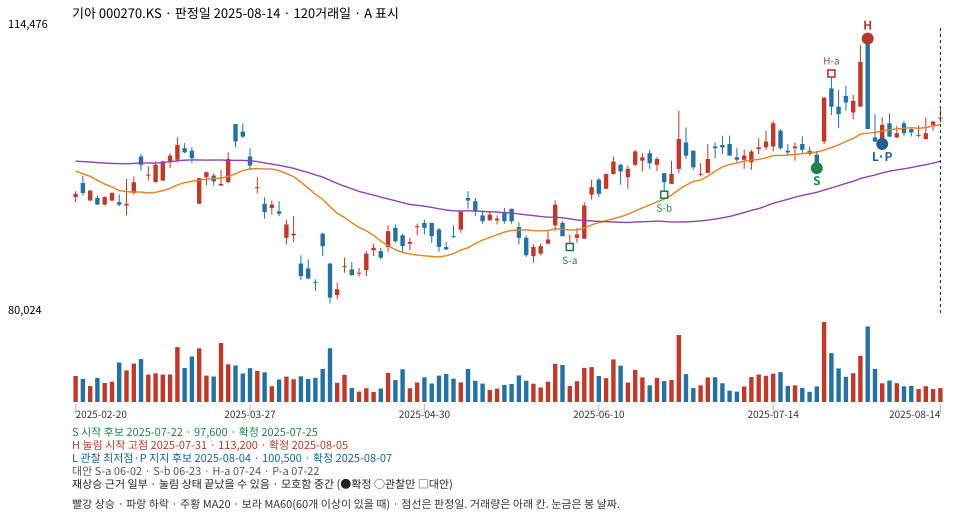
| 표시 | 날짜 | 가격 | 관찰 가능 시점 | 확정 | 읽은 이유 |
|---|---|---|---|---|---|
| S 시작 후보 | 2025-07-22 | 97,600 | 2025-07-22 마감 | 확정 2025-07-25 | H보다 앞선 가장 가까운 확정 저점 |
| S-a 대안 | 2025-06-02 | 88,100 | 2025-06-02 마감 | 확정 2025-06-09 | 더 큰 상승의 저점 |
| S-b 대안 | 2025-06-23 | 94,400 | 2025-06-23 마감 | 확정 2025-06-26 | 첫 번째 올라가는 저점 |
| H 눌림 시작 고점 | 2025-07-31 | 113,200 | 2025-07-31 마감 | 확정 2025-08-05 | 7월 상승의 정점 |
| H-a 대안 | 2025-07-24 | 109,000 | 2025-07-24 마감 | 확정 2025-07-29 | 같은 상승의 앞선 고점 |
| L 관찰 최저점 | 2025-08-04 | 100,500 | 2025-08-04 마감 | 확정 2025-08-07 | H 다음 봉부터 판정일까지의 가장 낮은 저가. 도구가 계산한 값이다 |
| P 지지 후보 | 2025-08-04 | 100,500 | 2025-08-04 마감 | 확정 2025-08-07 | 8월 초 저점 |
| P-a 대안 | 2025-07-22 | 97,600 | 2025-07-22 마감 | 확정 2025-07-25 | H 앞의 마지막 확정 저점 |
재상승 근거 (일부): 열 거래일 동안 100,500~104,700의 좁은 횡보이고 저점이 천천히 올라간다
2025-08-14 · 마지막 두 거래일의 종가가 8월 1일 이후 가장 높음
모호한 점 (중간): 얕은 하락 뒤 횡보라 하락이 끝났는지 차트로 보이지 않는다
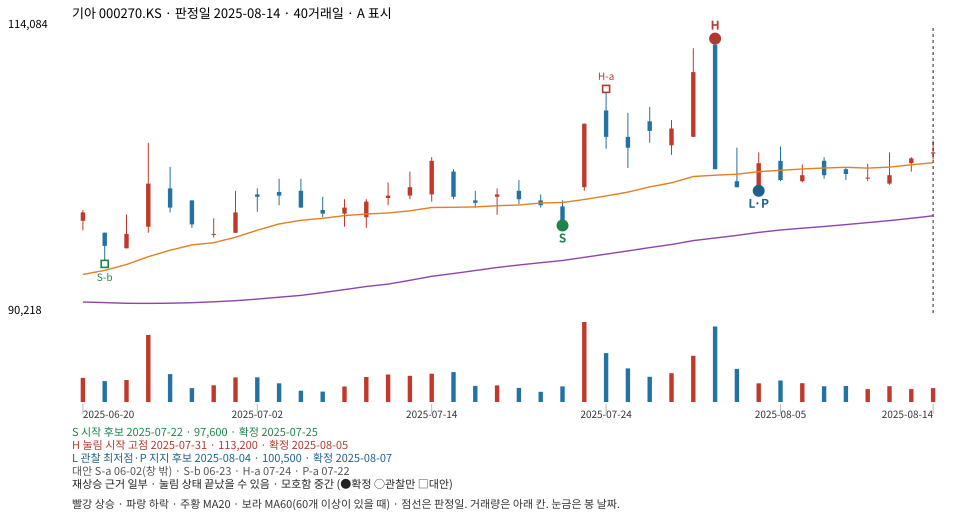
코드 대조 (A 고정 뒤 작성) · 일치
표본 구분: 눌림이 최종 선택 · 눌림 자체 상태: ready (준비) · 그날 최종 상태: ready · 최종 계획 패턴: trend_pullback
공통 차단 사유: 없음 · 눌림 자체 차단: 없음
구간 시작 좌표: 명시적 시작 좌표 없음 (패키지 기록: pullback_start=unrecorded)
| 코드 창 | 기간 | 창 안 극값 | A 표시와 비교 |
|---|---|---|---|
| 목표 기준(마지막 봉 제외 20봉) | 2025-07-17 ~ 2025-08-13 (20봉) | 최고 2025-07-31 · 113,200 | A의 H와 같은 날 |
| 손절 기준(최근 10봉) | 2025-08-01 ~ 2025-08-14 (10봉) | 최저 2025-08-04 · 100,500 | A의 L과 같은 날 |
| 추세 비교: 최근 20봉 | 2025-07-18 ~ 2025-08-14 (20봉) | 최고 2025-07-31 · 113,200 | A의 H 2025-07-31는 이 창 안: 예 |
| 추세 비교: 직전 20봉 | 2025-06-20 ~ 2025-07-17 (20봉) | 최저 2025-06-23 · 94,400 | A의 S 2025-07-22는 최근 40봉 안: 예 |
| 근접 확인(판정일 직전 5봉) | 2025-08-07 ~ 2025-08-13 (5봉) | 최저 2025-08-12 · 101,000 | MA20+0.75ATR 이하인지 보는 창 |
| 거래량 확인 | 2025-08-11 ~ 2025-08-13 (3봉) vs 2025-07-14 ~ 2025-08-08 (20봉) | 비율 0.468 | 코드 기준 0.85 미만이면 감소로 봄 |
눌림 코드 게이트: rising_structure=예 · atr_valid=예 · valid_zone=예 · near_ma20=예 · volume_contracted=예 · recovery_close=예 · bullish_candle=예 · volume_recovery=예 · fresh_confirmation=예
저장된 값(가격 수준): 진입 103700 · 손절 99849 · 목표 113200 · 손익비 2.467 · 후보 구간 101538~104141
| 돌파와 목표의 관계 (세 항목은 따로 계산) | ||
|---|---|---|
| A의 H 2025-07-31 · 113,200 고가 돌파 | 판정일 아니오 | H 이후 처음 없음 |
| A의 H 종가 돌파 | 판정일 아니오 | H 이후 처음 없음 |
| 목표 기준 2025-07-31 · 113,200 (판정일 제외 20봉 최고) | 판정일 고가 초과 아니오 | 판정일 종가 초과 아니오 |
| 목표가 ≤ 진입 기준: 목표 113,200 / 저장된 진입가 103,700 | 아니오 저장된 진입가와 목표가를 비교한 값 | |
추가 검토 (B 확인 뒤, 블라인드 아님) · 큰 조정 시작 고점과 최근 재하락 시작 고점
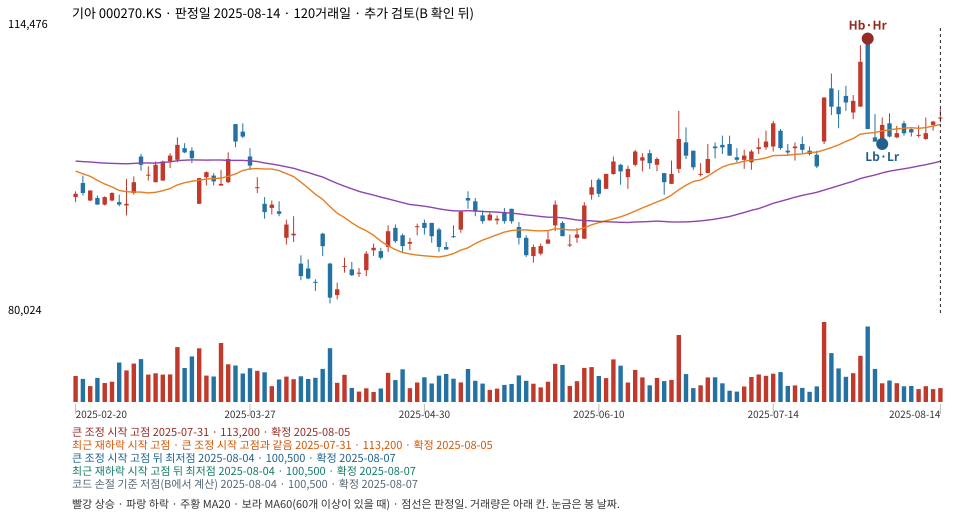
| 구분 | 상태 | 날짜 | 가격 | 확정 | 읽은 이유 |
|---|---|---|---|---|---|
| 큰 조정 시작 고점 (H_big) | 표시 | 2025-07-31 | 113,200 | 확정 2025-08-05 | 창 최고가 A의 H와 같다 |
| 최근 재하락 시작 고점 (H_recent) | 표시 · H_big과 같음 | 2025-07-31 | 113,200 | 확정 2025-08-05 | 재하락 갈래가 없어 H_big과 같다. 이후 열 거래일은 좁은 횡보 |
| H_big 뒤 최저점 | 표시 | 2025-08-04 | 100,500 | 확정 2025-08-07 | 계산값 |
| H_recent 뒤 최저점 | 표시 | 2025-08-04 | 100,500 | 확정 2025-08-07 | 계산값 |
| 코드 손절 기준 저점(B) | - | 2025-08-04 | 100,500 | - | 창 2025-08-01 ~ 2025-08-14 |
재비교 (참고: 이 사례는 손절 기준 저점이 A의 L과 같았다): 두 고점 기준 저점이 같고 코드 기준과 일치
16. 한전기술 052690.KS · 판정일 2025-11-10 · 30416c78c22d1d0e
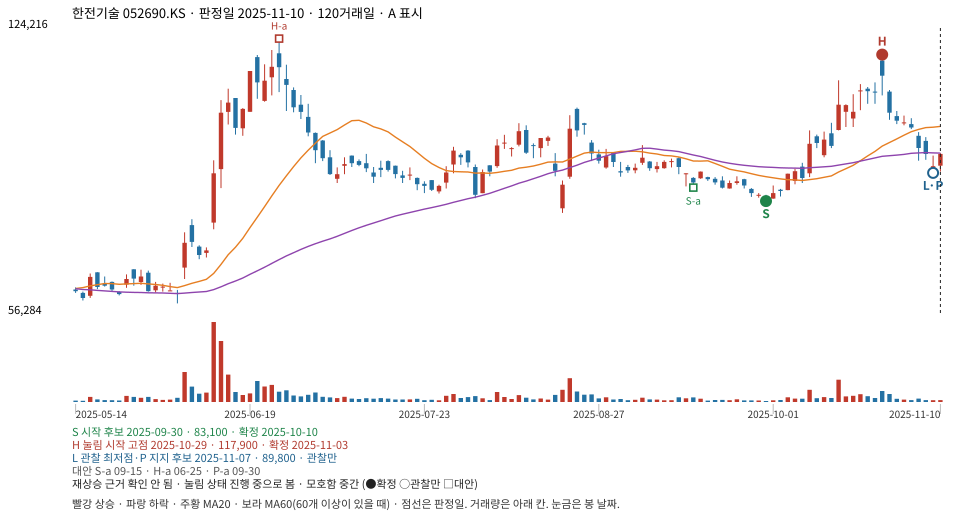
| 표시 | 날짜 | 가격 | 관찰 가능 시점 | 확정 | 읽은 이유 |
|---|---|---|---|---|---|
| S 시작 후보 | 2025-09-30 | 83,100 | 2025-09-30 마감 | 확정 2025-10-10 | H보다 앞선 가장 가까운 확정 저점 |
| S-a 대안 | 2025-09-15 | 86,300 | 2025-09-15 마감 | 확정 2025-09-18 | 같은 바닥의 앞선 저점 |
| H 눌림 시작 고점 | 2025-10-29 | 117,900 | 2025-10-29 마감 | 확정 2025-11-03 | 10월 상승의 정점 |
| H-a 대안 | 2025-06-25 | 121,700 | 2025-06-25 마감 | 확정 2025-06-30 | H 바로 아래의 장기 정점 121,700 |
| L 관찰 최저점 | 2025-11-07 | 89,800 | 2025-11-07 마감 | 관찰만 · 판정일까지 오른쪽 완료 봉이 3개 미만 | H 다음 봉부터 판정일까지의 가장 낮은 저가. 도구가 계산한 값이다 |
| P 지지 후보 | 2025-11-07 | 89,800 | 2025-11-07 마감 | 관찰만 · 판정일까지 오른쪽 완료 봉이 3개 미만 | 저점 뒤 완료 봉이 하나뿐이라 확정되지 않음 |
| P-a 대안 | 2025-09-30 | 83,100 | 2025-09-30 마감 | 확정 2025-10-10 | 마지막 확정 저점 |
재상승 근거 (확인 안 됨): 종가가 20일 평균 아래에 머물고, 판정일에 저점이 조금 올라간 것이 유일한 신호
모호한 점 (중간): H가 6월 정점 바로 아래라 더 큰 구조를 이중 천장으로 읽을 수도 있다
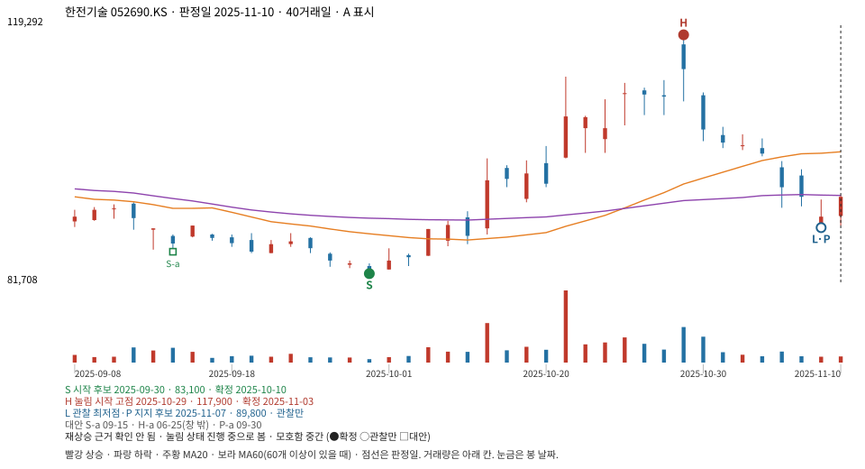
코드 대조 (A 고정 뒤 작성) · 일치
표본 구분: 눌림이 최종 선택 · 눌림 자체 상태: ready (준비) · 그날 최종 상태: ready · 최종 계획 패턴: trend_pullback
공통 차단 사유: 없음 · 눌림 자체 차단: 없음
구간 시작 좌표: 명시적 시작 좌표 없음 (패키지 기록: pullback_start=unrecorded)
| 코드 창 | 기간 | 창 안 극값 | A 표시와 비교 |
|---|---|---|---|
| 목표 기준(마지막 봉 제외 20봉) | 2025-10-13 ~ 2025-11-07 (20봉) | 최고 2025-10-29 · 117,900 | A의 H와 같은 날 |
| 손절 기준(최근 10봉) | 2025-10-28 ~ 2025-11-10 (10봉) | 최저 2025-11-07 · 89,800 | A의 L과 같은 날 |
| 추세 비교: 최근 20봉 | 2025-10-14 ~ 2025-11-10 (20봉) | 최고 2025-10-29 · 117,900 | A의 H 2025-10-29는 이 창 안: 예 |
| 추세 비교: 직전 20봉 | 2025-09-08 ~ 2025-10-13 (20봉) | 최저 2025-09-30 · 83,100 | A의 S 2025-09-30는 최근 40봉 안: 예 |
| 근접 확인(판정일 직전 5봉) | 2025-11-03 ~ 2025-11-07 (5봉) | 최저 2025-11-07 · 89,800 | MA20+0.75ATR 이하인지 보는 창 |
| 거래량 확인 | 2025-11-05 ~ 2025-11-07 (3봉) vs 2025-10-01 ~ 2025-11-04 (20봉) | 비율 0.404 | 코드 기준 0.85 미만이면 감소로 봄 |
눌림 코드 게이트: rising_structure=예 · atr_valid=예 · valid_zone=예 · near_ma20=예 · volume_contracted=예 · recovery_close=예 · bullish_candle=예 · volume_recovery=예 · fresh_confirmation=예
저장된 값(가격 수준): 진입 94300 · 손절 88667 · 목표 117900 · 손익비 4.19 · 후보 구간 98589~103120
| 돌파와 목표의 관계 (세 항목은 따로 계산) | ||
|---|---|---|
| A의 H 2025-10-29 · 117,900 고가 돌파 | 판정일 아니오 | H 이후 처음 없음 |
| A의 H 종가 돌파 | 판정일 아니오 | H 이후 처음 없음 |
| 목표 기준 2025-10-29 · 117,900 (판정일 제외 20봉 최고) | 판정일 고가 초과 아니오 | 판정일 종가 초과 아니오 |
| 목표가 ≤ 진입 기준: 목표 117,900 / 저장된 진입가 94,300 | 아니오 저장된 진입가와 목표가를 비교한 값 | |
추가 검토 (B 확인 뒤, 블라인드 아님) · 큰 조정 시작 고점과 최근 재하락 시작 고점
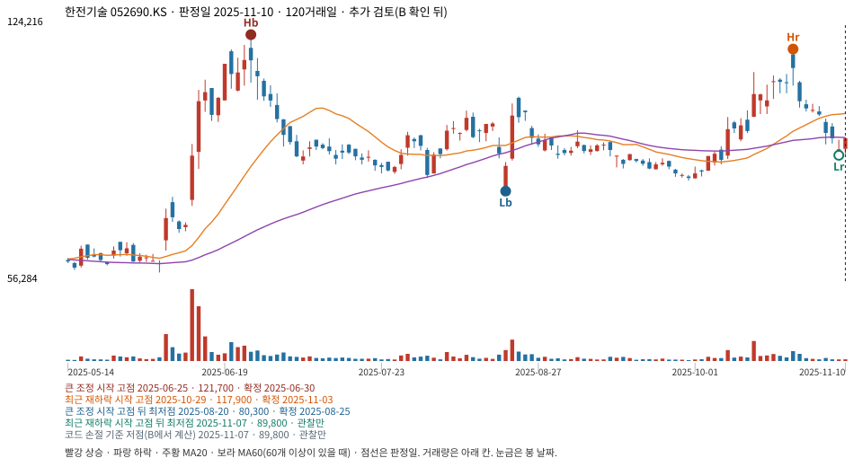
| 구분 | 상태 | 날짜 | 가격 | 확정 | 읽은 이유 |
|---|---|---|---|---|---|
| 큰 조정 시작 고점 (H_big) | 표시 | 2025-06-25 | 121,700 | 확정 2025-06-30 | 창 최고는 6월 25일 121,700. 8월 20일까지 약 34% 내렸다. 10월 29일 고점이 이 고점 바로 아래라 이중 천장으로도 읽힌다 |
| 최근 재하락 시작 고점 (H_recent) | 표시 | 2025-10-29 | 117,900 | 확정 2025-11-03 | 10월 29일의 확정 피벗 고점에서 11월 7일까지 재하락 |
| H_big 뒤 최저점 | 표시 | 2025-08-20 | 80,300 | 확정 2025-08-25 | 계산값 |
| H_recent 뒤 최저점 | 표시 | 2025-11-07 | 89,800 | 관찰만 · 판정일까지 오른쪽 완료 봉이 3개 미만 | 계산값 |
| 코드 손절 기준 저점(B) | - | 2025-11-07 | 89,800 | - | 창 2025-10-28 ~ 2025-11-10 |
재비교 (참고: 이 사례는 손절 기준 저점이 A의 L과 같았다): 최근 재하락 저점과 일치
17. 로보티즈 108490.KQ · 판정일 2026-10-01 · 37e84aadd60596f8
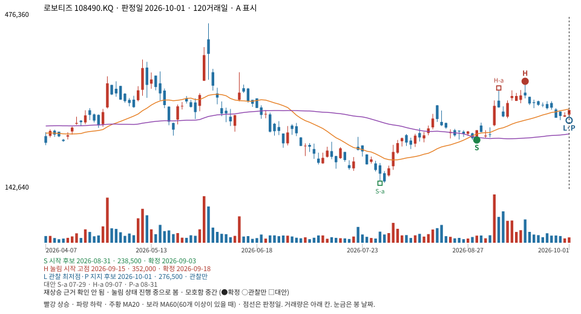
| 표시 | 날짜 | 가격 | 관찰 가능 시점 | 확정 | 읽은 이유 |
|---|---|---|---|---|---|
| S 시작 후보 | 2026-08-31 | 238,500 | 2026-08-31 마감 | 확정 2026-09-03 | H보다 앞선 가장 가까운 확정 저점 |
| S-a 대안 | 2026-07-29 | 155,000 | 2026-07-29 마감 | 확정 2026-08-03 | 155,000에서 시작한 전체 반등의 바닥 |
| H 눌림 시작 고점 | 2026-09-15 | 352,000 | 2026-09-15 마감 | 확정 2026-09-18 | 9월 상승의 정점 |
| H-a 대안 | 2026-09-07 | 339,000 | 2026-09-07 마감 | 확정 2026-09-10 | 같은 상승의 앞선 낮은 고점 |
| L 관찰 최저점 | 2026-10-01 | 276,500 | 2026-10-01 마감 | 관찰만 · 판정일까지 오른쪽 완료 봉이 3개 미만 | H 다음 봉부터 판정일까지의 가장 낮은 저가. 도구가 계산한 값이다 |
| P 지지 후보 | 2026-10-01 | 276,500 | 2026-10-01 마감 | 관찰만 · 판정일까지 오른쪽 완료 봉이 3개 미만 | 판정일 저가 |
| P-a 대안 | 2026-08-31 | 238,500 | 2026-08-31 마감 | 확정 2026-09-03 | H 앞의 마지막 확정 저점 |
재상승 근거 (확인 안 됨): 종가가 310,000에서 286,000으로 미끄러지고 최저점이 판정일
모호한 점 (중간): 어느 반등을 상승 구간으로 볼지에 따라 S가 바뀐다. 창 안에 464,000에서 155,000으로 내린 큰 하락이 있다
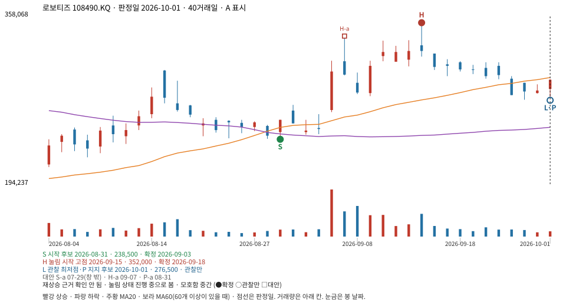
코드 대조 (A 고정 뒤 작성) · 일치
표본 구분: 눌림이 최종 선택 · 눌림 자체 상태: ready (준비) · 그날 최종 상태: ready · 최종 계획 패턴: trend_pullback
공통 차단 사유: 없음 · 눌림 자체 차단: 없음
구간 시작 좌표: 명시적 시작 좌표 없음 (패키지 기록: pullback_start=unrecorded)
| 코드 창 | 기간 | 창 안 극값 | A 표시와 비교 |
|---|---|---|---|
| 목표 기준(마지막 봉 제외 20봉) | 2026-09-01 ~ 2026-09-30 (20봉) | 최고 2026-09-15 · 352,000 | A의 H와 같은 날 |
| 손절 기준(최근 10봉) | 2026-09-16 ~ 2026-10-01 (10봉) | 최저 2026-10-01 · 276,500 | A의 L과 같은 날 |
| 추세 비교: 최근 20봉 | 2026-09-02 ~ 2026-10-01 (20봉) | 최고 2026-09-15 · 352,000 | A의 H 2026-09-15는 이 창 안: 예 |
| 추세 비교: 직전 20봉 | 2026-08-04 ~ 2026-09-01 (20봉) | 최저 2026-08-04 · 211,500 | A의 S 2026-08-31는 최근 40봉 안: 예 |
| 근접 확인(판정일 직전 5봉) | 2026-09-22 ~ 2026-09-30 (5봉) | 최저 2026-09-29 · 277,000 | MA20+0.75ATR 이하인지 보는 창 |
| 거래량 확인 | 2026-09-28 ~ 2026-09-30 (3봉) vs 2026-08-27 ~ 2026-09-23 (20봉) | 비율 0.432 | 코드 기준 0.85 미만이면 감소로 봄 |
눌림 코드 게이트: rising_structure=예 · atr_valid=예 · valid_zone=예 · near_ma20=예 · volume_contracted=예 · recovery_close=예 · bullish_candle=예 · volume_recovery=예 · fresh_confirmation=예
저장된 값(가격 수준): 진입 296500 · 손절 272921 · 목표 352000 · 손익비 2.354 · 후보 구간 291492~305807
| 돌파와 목표의 관계 (세 항목은 따로 계산) | ||
|---|---|---|
| A의 H 2026-09-15 · 352,000 고가 돌파 | 판정일 아니오 | H 이후 처음 없음 |
| A의 H 종가 돌파 | 판정일 아니오 | H 이후 처음 없음 |
| 목표 기준 2026-09-15 · 352,000 (판정일 제외 20봉 최고) | 판정일 고가 초과 아니오 | 판정일 종가 초과 아니오 |
| 목표가 ≤ 진입 기준: 목표 352,000 / 저장된 진입가 296,500 | 아니오 저장된 진입가와 목표가를 비교한 값 | |
추가 검토 (B 확인 뒤, 블라인드 아님) · 큰 조정 시작 고점과 최근 재하락 시작 고점
| 구분 | 상태 | 날짜 | 가격 | 확정 | 읽은 이유 |
|---|---|---|---|---|---|
| 큰 조정 시작 고점 (H_big) | 표시 | 2026-06-02 | 464,000 | 확정 2026-06-08 | 창 최고는 6월 2일 464,000. 7월 29일까지 약 67% 내렸다 |
| 최근 재하락 시작 고점 (H_recent) | 표시 | 2026-09-15 | 352,000 | 확정 2026-09-18 | 9월 15일의 확정 피벗 고점에서 판정일까지 재하락 |
| H_big 뒤 최저점 | 표시 | 2026-07-29 | 155,000 | 확정 2026-08-03 | 계산값 |
| H_recent 뒤 최저점 | 표시 | 2026-10-01 | 276,500 | 관찰만 · 판정일까지 오른쪽 완료 봉이 3개 미만 | 계산값 |
| 코드 손절 기준 저점(B) | - | 2026-10-01 | 276,500 | - | 창 2026-09-16 ~ 2026-10-01 |
재비교 (참고: 이 사례는 손절 기준 저점이 A의 L과 같았다): 최근 재하락 저점과 일치
18. HD건설기계 267270.KS · 판정일 2025-02-26 · 433ea121b8d5fb8e
| 표시 | 날짜 | 가격 | 관찰 가능 시점 | 확정 | 읽은 이유 |
|---|---|---|---|---|---|
| S 시작 후보 | 2025-02-03 | 63,500 | 2025-02-03 마감 | 확정 2025-02-06 | H보다 앞선 가장 가까운 확정 저점 |
| S-a 대안 | 2025-01-20 | 64,100 | 2025-01-20 마감 | 확정 2025-01-23 | 앞선 저점 |
| H 눌림 시작 고점 | 2025-02-13 | 91,500 | 2025-02-13 마감 | 확정 2025-02-18 | 1월 저점에서 오른 급등 고점 |
| L 관찰 최저점 | 2025-02-21 | 71,100 | 2025-02-21 마감 | 확정 2025-02-26 | H 다음 봉부터 판정일까지의 가장 낮은 저가. 도구가 계산한 값이다 |
| P 지지 후보 | 2025-02-21 | 71,100 | 2025-02-21 마감 | 확정 2025-02-26 | 하락 최저점. 판정일에 확정됨 |
| P-a 대안 | 2025-02-03 | 63,500 | 2025-02-03 마감 | 확정 2025-02-06 | 급등의 바닥 |
재상승 근거 (일부): 저점은 올라가지만 종가는 2월 14일 종가 77,900 아래
2025-02-26 · 2월 21일 뒤 저가 세 개가 모두 71,100보다 높음
모호한 점 (낮음): 뚜렷한 급등과 하락
코드 대조 (A 고정 뒤 작성) · 일치
표본 구분: 눌림이 최종 선택 · 눌림 자체 상태: ready (준비) · 그날 최종 상태: ready · 최종 계획 패턴: trend_pullback
공통 차단 사유: 없음 · 눌림 자체 차단: 없음
구간 시작 좌표: 명시적 시작 좌표 없음 (패키지 기록: pullback_start=unrecorded)
| 코드 창 | 기간 | 창 안 극값 | A 표시와 비교 |
|---|---|---|---|
| 목표 기준(마지막 봉 제외 20봉) | 2025-01-23 ~ 2025-02-25 (20봉) | 최고 2025-02-13 · 91,500 | A의 H와 같은 날 |
| 손절 기준(최근 10봉) | 2025-02-13 ~ 2025-02-26 (10봉) | 최저 2025-02-21 · 71,100 | A의 L과 같은 날 |
| 추세 비교: 최근 20봉 | 2025-01-24 ~ 2025-02-26 (20봉) | 최고 2025-02-13 · 91,500 | A의 H 2025-02-13는 이 창 안: 예 |
| 추세 비교: 직전 20봉 | 2024-12-24 ~ 2025-01-23 (20봉) | 최저 2024-12-27 · 57,300 | A의 S 2025-02-03는 최근 40봉 안: 예 |
| 근접 확인(판정일 직전 5봉) | 2025-02-19 ~ 2025-02-25 (5봉) | 최저 2025-02-21 · 71,100 | MA20+0.75ATR 이하인지 보는 창 |
| 거래량 확인 | 2025-02-21 ~ 2025-02-25 (3봉) vs 2025-01-20 ~ 2025-02-20 (20봉) | 비율 0.461 | 코드 기준 0.85 미만이면 감소로 봄 |
눌림 코드 게이트: rising_structure=예 · atr_valid=예 · valid_zone=예 · near_ma20=예 · volume_contracted=예 · recovery_close=예 · bullish_candle=예 · volume_recovery=예 · fresh_confirmation=예
저장된 값(가격 수준): 진입 77400 · 손절 70125 · 목표 91500 · 손익비 1.938 · 후보 구간 70936~74833
| 돌파와 목표의 관계 (세 항목은 따로 계산) | ||
|---|---|---|
| A의 H 2025-02-13 · 91,500 고가 돌파 | 판정일 아니오 | H 이후 처음 없음 |
| A의 H 종가 돌파 | 판정일 아니오 | H 이후 처음 없음 |
| 목표 기준 2025-02-13 · 91,500 (판정일 제외 20봉 최고) | 판정일 고가 초과 아니오 | 판정일 종가 초과 아니오 |
| 목표가 ≤ 진입 기준: 목표 91,500 / 저장된 진입가 77,400 | 아니오 저장된 진입가와 목표가를 비교한 값 | |
추가 검토 (B 확인 뒤, 블라인드 아님) · 큰 조정 시작 고점과 최근 재하락 시작 고점
| 구분 | 상태 | 날짜 | 가격 | 확정 | 읽은 이유 |
|---|---|---|---|---|---|
| 큰 조정 시작 고점 (H_big) | 표시 | 2025-02-13 | 91,500 | 확정 2025-02-18 | 창 최고가 A의 H와 같다 |
| 최근 재하락 시작 고점 (H_recent) | 표시 · H_big과 같음 | 2025-02-13 | 91,500 | 확정 2025-02-18 | 재하락 갈래가 없어 H_big과 같다 |
| H_big 뒤 최저점 | 표시 | 2025-02-21 | 71,100 | 확정 2025-02-26 | 계산값 |
| H_recent 뒤 최저점 | 표시 | 2025-02-21 | 71,100 | 확정 2025-02-26 | 계산값 |
| 코드 손절 기준 저점(B) | - | 2025-02-21 | 71,100 | - | 창 2025-02-13 ~ 2025-02-26 |
재비교 (참고: 이 사례는 손절 기준 저점이 A의 L과 같았다): 두 고점 기준 저점이 같고 코드 기준과 일치
19. 켄코아에어로스페이스 274090.KQ · 판정일 2025-06-04 · 6720e72eeff4d079
| 표시 | 날짜 | 가격 | 관찰 가능 시점 | 확정 | 읽은 이유 |
|---|---|---|---|---|---|
| S 시작 후보 | 2025-05-13 | 12,500 | 2025-05-13 마감 | 확정 2025-05-16 | H보다 앞선 가장 가까운 확정 저점 |
| S-a 대안 | 2025-04-29 | 11,520 | 2025-04-29 마감 | 확정 2025-05-07 | 두 번째 반등 앞의 저점 |
| S-b 대안 | 2025-04-09 | 9,950 | 2025-04-09 마감 | 확정 2025-04-14 | 17,890에서 내려온 큰 하락의 저점 |
| H 눌림 시작 고점 | 2025-05-15 | 14,230 | 2025-05-15 마감 | 확정 2025-05-20 | 5월 반등의 정점 |
| H-a 대안 | 2025-05-28 | 13,650 | 2025-05-28 마감 | 확정 2025-06-02 | 나중의 낮은 고점 |
| L 관찰 최저점 | 2025-05-20 | 12,270 | 2025-05-20 마감 | 확정 2025-05-23 | H 다음 봉부터 판정일까지의 가장 낮은 저가. 도구가 계산한 값이다 |
| P 지지 후보 | 2025-05-20 | 12,270 | 2025-05-20 마감 | 확정 2025-05-23 | 하락 최저점 |
| P-a 대안 | 2025-04-29 | 11,520 | 2025-04-29 마감 | 확정 2025-05-07 | 앞선 반등의 낮은 저점 |
재상승 근거 (확인 안 됨): 열 거래일 12,400~13,650 횡보이고 H 고가 14,230을 넘은 종가가 없다
모호한 점 (높음): 44% 하락 뒤 반등이고 이후 좁은 횡보라 상승 구간이 이틀뿐이다
코드 대조 (A 고정 뒤 작성) · 차트가 모호
표본 구분: 눌림이 최종 선택 · 눌림 자체 상태: ready (준비) · 그날 최종 상태: ready · 최종 계획 패턴: trend_pullback
공통 차단 사유: 없음 · 눌림 자체 차단: 없음
구간 시작 좌표: 명시적 시작 좌표 없음 (패키지 기록: pullback_start=unrecorded)
| 코드 창 | 기간 | 창 안 극값 | A 표시와 비교 |
|---|---|---|---|
| 목표 기준(마지막 봉 제외 20봉) | 2025-05-02 ~ 2025-06-02 (20봉) | 최고 2025-05-15 · 14,230 | A의 H와 같은 날 |
| 손절 기준(최근 10봉) | 2025-05-21 ~ 2025-06-04 (10봉) | 최저 2025-05-30 · 12,390 | A의 L 2025-05-20 · 12,270와 다름 · A의 L이 창 밖 |
| 추세 비교: 최근 20봉 | 2025-05-07 ~ 2025-06-04 (20봉) | 최고 2025-05-15 · 14,230 | A의 H 2025-05-15는 이 창 안: 예 |
| 추세 비교: 직전 20봉 | 2025-04-04 ~ 2025-05-02 (20봉) | 최저 2025-04-09 · 9,950 | A의 S 2025-05-13는 최근 40봉 안: 예 |
| 근접 확인(판정일 직전 5봉) | 2025-05-27 ~ 2025-06-02 (5봉) | 최저 2025-05-30 · 12,390 | MA20+0.75ATR 이하인지 보는 창 |
| 거래량 확인 | 2025-05-29 ~ 2025-06-02 (3봉) vs 2025-04-28 ~ 2025-05-28 (20봉) | 비율 0.493 | 코드 기준 0.85 미만이면 감소로 봄 |
눌림 코드 게이트: rising_structure=예 · atr_valid=예 · valid_zone=예 · near_ma20=예 · volume_contracted=예 · recovery_close=예 · bullish_candle=예 · volume_recovery=예 · fresh_confirmation=예
저장된 값(가격 수준): 진입 12940 · 손절 12251 · 목표 14230 · 손익비 1.872 · 후보 구간 12733~13287
| 돌파와 목표의 관계 (세 항목은 따로 계산) | ||
|---|---|---|
| A의 H 2025-05-15 · 14,230 고가 돌파 | 판정일 아니오 | H 이후 처음 없음 |
| A의 H 종가 돌파 | 판정일 아니오 | H 이후 처음 없음 |
| 목표 기준 2025-05-15 · 14,230 (판정일 제외 20봉 최고) | 판정일 고가 초과 아니오 | 판정일 종가 초과 아니오 |
| 목표가 ≤ 진입 기준: 목표 14,230 / 저장된 진입가 12,940 | 아니오 저장된 진입가와 목표가를 비교한 값 | |
- 손절 기준 저점 2025-05-30(12,390)은 A의 L 2025-05-20(12,270)와 날짜가 다르다.
- A의 L 2025-05-20은 코드의 손절 기준 창(최근 10봉, 2025-05-21부터) 밖이다. 창이 눌림 구간보다 짧다.
태그: stop_ref_not_A_L
추가 검토 (B 확인 뒤, 블라인드 아님) · 큰 조정 시작 고점과 최근 재하락 시작 고점 · 손절 기준 재비교 대상
| 구분 | 상태 | 날짜 | 가격 | 확정 | 읽은 이유 |
|---|---|---|---|---|---|
| 큰 조정 시작 고점 (H_big) | 표시 | 2025-02-14 | 17,890 | 확정 2025-02-19 | 창 최고는 2월 14일 17,890(긴 위꼬리). 4월 9일까지 약 44% 내렸다 |
| 최근 재하락 시작 고점 (H_recent) | 표시 | 2025-05-28 | 13,650 | 확정 2025-06-02 | 5월 28일의 확정 피벗 고점에서 5월 30일까지 재하락 |
| H_big 뒤 최저점 | 표시 | 2025-04-09 | 9,950 | 확정 2025-04-14 | 계산값 |
| H_recent 뒤 최저점 | 표시 | 2025-05-30 | 12,390 | 관찰만 · 판정일까지 오른쪽 완료 봉이 3개 미만 | 계산값 |
| 코드 손절 기준 저점(B) | - | 2025-05-30 | 12,390 | - | 창 2025-05-21 ~ 2025-06-04 |
재비교: 최근 재하락 저점과 일치
20. 드림시큐리티 203650.KQ · 판정일 2026-05-19 · 77bcbde825d44efd
| 표시 | 날짜 | 가격 | 관찰 가능 시점 | 확정 | 읽은 이유 |
|---|---|---|---|---|---|
| S 시작 후보 | 2026-04-30 | 2,605 | 2026-04-30 마감 | 확정 2026-05-07 | H보다 앞선 가장 가까운 확정 저점 |
| S-a 대안 | 2026-04-02 | 1,546 | 2026-04-02 마감 | 확정 2026-04-07 | 긴 횡보 바닥의 저점 |
| H 눌림 시작 고점 | 2026-05-07 | 4,675 | 2026-05-07 마감 | 확정 2026-05-12 | 5월 급등의 정점 |
| L 관찰 최저점 | 2026-05-18 | 2,805 | 2026-05-18 마감 | 관찰만 · 판정일까지 오른쪽 완료 봉이 3개 미만 | H 다음 봉부터 판정일까지의 가장 낮은 저가. 도구가 계산한 값이다 |
| P 지지 후보 | 2026-05-18 | 2,805 | 2026-05-18 마감 | 관찰만 · 판정일까지 오른쪽 완료 봉이 3개 미만 | 판정일 하루 전 저점이라 확정되지 않음 |
| P-a 대안 | 2026-04-30 | 2,605 | 2026-04-30 마감 | 확정 2026-05-07 | H 앞의 마지막 확정 저점 |
재상승 근거 (일부): 하루다. 5월 7일 이후의 흐름은 아직 낮아지는 쪽
2026-05-19 · 종가 3,355가 전일 종가 위, 거래량이 훨씬 큼
모호한 점 (중간): 한 달에 세 배가 오르고 하루 변동이 10~20%다
코드 대조 (A 고정 뒤 작성) · 구간이 다름
표본 구분: 눌림이 최종 선택 · 눌림 자체 상태: ready (준비) · 그날 최종 상태: ready · 최종 계획 패턴: trend_pullback
공통 차단 사유: 없음 · 눌림 자체 차단: 없음
구간 시작 좌표: 명시적 시작 좌표 없음 (패키지 기록: pullback_start=unrecorded)
| 코드 창 | 기간 | 창 안 극값 | A 표시와 비교 |
|---|---|---|---|
| 목표 기준(마지막 봉 제외 20봉) | 2026-04-17 ~ 2026-05-18 (20봉) | 최고 2026-05-07 · 4,675 | A의 H와 같은 날 |
| 손절 기준(최근 10봉) | 2026-05-06 ~ 2026-05-19 (10봉) | 최저 2026-05-06 · 2,685 | A의 L 2026-05-18 · 2,805와 다름 · A의 H보다 앞 |
| 추세 비교: 최근 20봉 | 2026-04-20 ~ 2026-05-19 (20봉) | 최고 2026-05-07 · 4,675 | A의 H 2026-05-07는 이 창 안: 예 |
| 추세 비교: 직전 20봉 | 2026-03-23 ~ 2026-04-17 (20봉) | 최저 2026-03-23 · 1,533 | A의 S 2026-04-30는 최근 40봉 안: 예 |
| 근접 확인(판정일 직전 5봉) | 2026-05-12 ~ 2026-05-18 (5봉) | 최저 2026-05-18 · 2,805 | MA20+0.75ATR 이하인지 보는 창 |
| 거래량 확인 | 2026-05-14 ~ 2026-05-18 (3봉) vs 2026-04-14 ~ 2026-05-13 (20봉) | 비율 0.16 | 코드 기준 0.85 미만이면 감소로 봄 |
눌림 코드 게이트: rising_structure=예 · atr_valid=예 · valid_zone=예 · near_ma20=예 · volume_contracted=예 · recovery_close=예 · bullish_candle=예 · volume_recovery=예 · fresh_confirmation=예
저장된 값(가격 수준): 진입 3355 · 손절 2583 · 목표 4675 · 손익비 1.71 · 후보 구간 3194~3599
| 돌파와 목표의 관계 (세 항목은 따로 계산) | ||
|---|---|---|
| A의 H 2026-05-07 · 4,675 고가 돌파 | 판정일 아니오 | H 이후 처음 없음 |
| A의 H 종가 돌파 | 판정일 아니오 | H 이후 처음 없음 |
| 목표 기준 2026-05-07 · 4,675 (판정일 제외 20봉 최고) | 판정일 고가 초과 아니오 | 판정일 종가 초과 아니오 |
| 목표가 ≤ 진입 기준: 목표 4,675 / 저장된 진입가 3,355 | 아니오 저장된 진입가와 목표가를 비교한 값 | |
- 손절 기준 저점 2026-05-06(2,685)은 A의 L 2026-05-18(2,805)와 날짜가 다르다.
- 손절 기준 저점 2026-05-06은 A의 H 2026-05-07보다 앞이다. 코드의 10봉 창이 눌림이 아니라 그 앞의 상승 구간 저점을 잡았다.
태그: stop_ref_not_A_L
추가 검토 (B 확인 뒤, 블라인드 아님) · 큰 조정 시작 고점과 최근 재하락 시작 고점 · 손절 기준 재비교 대상
| 구분 | 상태 | 날짜 | 가격 | 확정 | 읽은 이유 |
|---|---|---|---|---|---|
| 큰 조정 시작 고점 (H_big) | 표시 | 2026-05-07 | 4,675 | 확정 2026-05-12 | 창 최고가 A의 H와 같다 |
| 최근 재하락 시작 고점 (H_recent) | 표시 · H_big과 같음 | 2026-05-07 | 4,675 | 확정 2026-05-12 | 재하락 갈래가 없어 H_big과 같다 |
| H_big 뒤 최저점 | 표시 | 2026-05-18 | 2,805 | 관찰만 · 판정일까지 오른쪽 완료 봉이 3개 미만 | 계산값 |
| H_recent 뒤 최저점 | 표시 | 2026-05-18 | 2,805 | 관찰만 · 판정일까지 오른쪽 완료 봉이 3개 미만 | 계산값 |
| 코드 손절 기준 저점(B) | - | 2026-05-06 | 2,685 | - | 창 2026-05-06 ~ 2026-05-19 |
재비교: 코드 기준 저점이 최근 재하락 시작 고점보다 앞
21. 필옵틱스 161580.KQ · 판정일 2026-02-19 · 78eecedb44104872
| 표시 | 날짜 | 가격 | 관찰 가능 시점 | 확정 | 읽은 이유 |
|---|---|---|---|---|---|
| S 시작 후보 | 2026-01-21 | 40,950 | 2026-01-21 마감 | 확정 2026-01-26 | H보다 앞선 가장 가까운 확정 저점 |
| S-a 대안 | 2026-01-15 | 40,850 | 2026-01-15 마감 | 확정 2026-01-20 | 일주일 앞의 조금 낮은 저점 |
| H 눌림 시작 고점 | 2026-01-30 | 60,300 | 2026-01-30 마감 | 확정 2026-02-04 | 1월 상승의 정점 |
| H-a 대안 | 2026-02-10 | 55,000 | 2026-02-10 마감 | 확정 2026-02-13 | 재상승을 시도한 나중의 낮은 고점 |
| L 관찰 최저점 | 2026-02-06 | 46,900 | 2026-02-06 마감 | 확정 2026-02-11 | H 다음 봉부터 판정일까지의 가장 낮은 저가. 도구가 계산한 값이다 |
| P 지지 후보 | 2026-02-06 | 46,900 | 2026-02-06 마감 | 확정 2026-02-11 | 하락 최저점 |
| P-a 대안 | 2026-01-21 | 40,950 | 2026-01-21 마감 | 확정 2026-01-26 | H 앞의 마지막 확정 저점 |
재상승 근거 (일부): 저점은 올라갔지만 2월 10일 고점을 넘은 종가가 없다
2026-02-13 · 저가 47,400이 2월 6일 저가보다 높음
모호한 점 (낮음): 뚜렷한 하락과 낮은 고점
코드 대조 (A 고정 뒤 작성) · 일치
표본 구분: 눌림이 최종 선택 · 눌림 자체 상태: ready (준비) · 그날 최종 상태: ready · 최종 계획 패턴: trend_pullback
공통 차단 사유: 없음 · 눌림 자체 차단: 없음
구간 시작 좌표: 명시적 시작 좌표 없음 (패키지 기록: pullback_start=unrecorded)
| 코드 창 | 기간 | 창 안 극값 | A 표시와 비교 |
|---|---|---|---|
| 목표 기준(마지막 봉 제외 20봉) | 2026-01-19 ~ 2026-02-13 (20봉) | 최고 2026-01-30 · 60,300 | A의 H와 같은 날 |
| 손절 기준(최근 10봉) | 2026-02-03 ~ 2026-02-19 (10봉) | 최저 2026-02-06 · 46,900 | A의 L과 같은 날 |
| 추세 비교: 최근 20봉 | 2026-01-20 ~ 2026-02-19 (20봉) | 최고 2026-01-30 · 60,300 | A의 H 2026-01-30는 이 창 안: 예 |
| 추세 비교: 직전 20봉 | 2025-12-18 ~ 2026-01-19 (20봉) | 최저 2026-01-15 · 40,850 | A의 S 2026-01-21는 최근 40봉 안: 예 |
| 근접 확인(판정일 직전 5봉) | 2026-02-09 ~ 2026-02-13 (5봉) | 최저 2026-02-13 · 47,400 | MA20+0.75ATR 이하인지 보는 창 |
| 거래량 확인 | 2026-02-11 ~ 2026-02-13 (3봉) vs 2026-01-14 ~ 2026-02-10 (20봉) | 비율 0.532 | 코드 기준 0.85 미만이면 감소로 봄 |
눌림 코드 게이트: rising_structure=예 · atr_valid=예 · valid_zone=예 · near_ma20=예 · volume_contracted=예 · recovery_close=예 · bullish_candle=예 · volume_recovery=예 · fresh_confirmation=예
저장된 값(가격 수준): 진입 49900 · 손절 46111 · 목표 60300 · 손익비 2.745 · 후보 구간 48677~51832
| 돌파와 목표의 관계 (세 항목은 따로 계산) | ||
|---|---|---|
| A의 H 2026-01-30 · 60,300 고가 돌파 | 판정일 아니오 | H 이후 처음 없음 |
| A의 H 종가 돌파 | 판정일 아니오 | H 이후 처음 없음 |
| 목표 기준 2026-01-30 · 60,300 (판정일 제외 20봉 최고) | 판정일 고가 초과 아니오 | 판정일 종가 초과 아니오 |
| 목표가 ≤ 진입 기준: 목표 60,300 / 저장된 진입가 49,900 | 아니오 저장된 진입가와 목표가를 비교한 값 | |
추가 검토 (B 확인 뒤, 블라인드 아님) · 큰 조정 시작 고점과 최근 재하락 시작 고점
| 구분 | 상태 | 날짜 | 가격 | 확정 | 읽은 이유 |
|---|---|---|---|---|---|
| 큰 조정 시작 고점 (H_big) | 표시 | 2026-01-30 | 60,300 | 확정 2026-02-04 | 창 최고가 A의 H와 같다 |
| 최근 재하락 시작 고점 (H_recent) | 표시 | 2026-02-10 | 55,000 | 확정 2026-02-13 | 2월 6일 저점 뒤 반등한 2월 10일의 확정 피벗 고점에서 2월 13일까지 재하락. 저점은 더 높다 |
| H_big 뒤 최저점 | 표시 | 2026-02-06 | 46,900 | 확정 2026-02-11 | 계산값 |
| H_recent 뒤 최저점 | 표시 | 2026-02-13 | 47,400 | 관찰만 · 판정일까지 오른쪽 완료 봉이 3개 미만 | 계산값 |
| 코드 손절 기준 저점(B) | - | 2026-02-06 | 46,900 | - | 창 2026-02-03 ~ 2026-02-19 |
재비교 (참고: 이 사례는 손절 기준 저점이 A의 L과 같았다): 큰 조정 저점과 일치
22. 센서뷰 321370.KQ · 판정일 2025-07-21 · 907b3952ea96aafe
| 표시 | 날짜 | 가격 | 관찰 가능 시점 | 확정 | 읽은 이유 |
|---|---|---|---|---|---|
| S 시작 후보 | 2025-06-16 | 5,755 | 2025-06-16 마감 | 확정 2025-06-19 | H보다 앞선 가장 가까운 확정 저점 |
| S-a 대안 | 2025-04-09 | 5,425 | 2025-04-09 마감 | 확정 2025-04-14 | 봄 하락의 바닥 |
| H 눌림 시작 고점 | 2025-06-26 | 8,940 | 2025-06-26 마감 | 확정 2025-07-01 | 급등 고점. 차트에 긴 위꼬리가 있다 |
| H-a 대안 | 2025-07-15 | 7,360 | 2025-07-15 마감 | 확정 2025-07-18 | 나중의 낮은 고점 |
| L 관찰 최저점 | 2025-06-30 | 6,910 | 2025-06-30 마감 | 관찰만 · 3봉 안에 같거나 더 극단적인 봉이 있음 | H 다음 봉부터 판정일까지의 가장 낮은 저가. 도구가 계산한 값이다 |
| P 지지 후보 | 2025-06-30 | 6,910 | 2025-06-30 마감 | 관찰만 · 3봉 안에 같거나 더 극단적인 봉이 있음 | 하락 최저점 |
| P-a 대안 | 2025-06-16 | 5,755 | 2025-06-16 마감 | 확정 2025-06-19 | 급등의 출발점 |
재상승 근거 (일부): 마지막 낮은 고점은 종가로 넘었으나 급등 고점에는 한참 못 미침
2025-07-21 · 종가 7,435가 7월 15일 고가 7,360 위
모호한 점 (높음): 꼬리 봉 하나가 H를 정하고, 3주 동안 횡보했다
코드 대조 (A 고정 뒤 작성) · 차트가 모호
표본 구분: 눌림이 최종 선택 · 눌림 자체 상태: ready (준비) · 그날 최종 상태: ready · 최종 계획 패턴: trend_pullback
공통 차단 사유: 없음 · 눌림 자체 차단: 없음
구간 시작 좌표: 명시적 시작 좌표 없음 (패키지 기록: pullback_start=unrecorded)
| 코드 창 | 기간 | 창 안 극값 | A 표시와 비교 |
|---|---|---|---|
| 목표 기준(마지막 봉 제외 20봉) | 2025-06-23 ~ 2025-07-18 (20봉) | 최고 2025-06-26 · 8,940 | A의 H와 같은 날 |
| 손절 기준(최근 10봉) | 2025-07-08 ~ 2025-07-21 (10봉) | 최저 2025-07-17 · 6,975 | A의 L 2025-06-30 · 6,910와 다름 · A의 L이 창 밖 |
| 추세 비교: 최근 20봉 | 2025-06-24 ~ 2025-07-21 (20봉) | 최고 2025-06-26 · 8,940 | A의 H 2025-06-26는 이 창 안: 예 |
| 추세 비교: 직전 20봉 | 2025-05-23 ~ 2025-06-23 (20봉) | 최저 2025-05-23 · 5,685 | A의 S 2025-06-16는 최근 40봉 안: 예 |
| 근접 확인(판정일 직전 5봉) | 2025-07-14 ~ 2025-07-18 (5봉) | 최저 2025-07-17 · 6,975 | MA20+0.75ATR 이하인지 보는 창 |
| 거래량 확인 | 2025-07-16 ~ 2025-07-18 (3봉) vs 2025-06-18 ~ 2025-07-15 (20봉) | 비율 0.114 | 코드 기준 0.85 미만이면 감소로 봄 |
눌림 코드 게이트: rising_structure=예 · atr_valid=예 · valid_zone=예 · near_ma20=예 · volume_contracted=예 · recovery_close=예 · bullish_candle=예 · volume_recovery=예 · fresh_confirmation=예
저장된 값(가격 수준): 진입 7435 · 손절 6916 · 목표 8940 · 손익비 2.9 · 후보 구간 7110~7343
| 돌파와 목표의 관계 (세 항목은 따로 계산) | ||
|---|---|---|
| A의 H 2025-06-26 · 8,940 고가 돌파 | 판정일 아니오 | H 이후 처음 없음 |
| A의 H 종가 돌파 | 판정일 아니오 | H 이후 처음 없음 |
| 목표 기준 2025-06-26 · 8,940 (판정일 제외 20봉 최고) | 판정일 고가 초과 아니오 | 판정일 종가 초과 아니오 |
| 목표가 ≤ 진입 기준: 목표 8,940 / 저장된 진입가 7,435 | 아니오 저장된 진입가와 목표가를 비교한 값 | |
- 손절 기준 저점 2025-07-17(6,975)은 A의 L 2025-06-30(6,910)와 날짜가 다르다.
- A의 L 2025-06-30은 코드의 손절 기준 창(최근 10봉, 2025-07-08부터) 밖이다. 창이 눌림 구간보다 짧다.
태그: stop_ref_not_A_L
추가 검토 (B 확인 뒤, 블라인드 아님) · 큰 조정 시작 고점과 최근 재하락 시작 고점 · 손절 기준 재비교 대상
| 구분 | 상태 | 날짜 | 가격 | 확정 | 읽은 이유 |
|---|---|---|---|---|---|
| 큰 조정 시작 고점 (H_big) | 표시 | 2025-06-26 | 8,940 | 확정 2025-07-01 | 창 최고는 6월 26일의 거래량 큰 위꼬리 급등 봉이다. 저점이 이틀 뒤라 큰 조정이라기보다 급등 되돌림이다. 모호함이 높다 |
| 최근 재하락 시작 고점 (H_recent) | 표시 | 2025-07-15 | 7,360 | 확정 2025-07-18 | 7월 15일의 확정 피벗 고점에서 7월 17일까지 재하락 |
| H_big 뒤 최저점 | 표시 | 2025-06-30 | 6,910 | 관찰만 · 3봉 안에 같거나 더 극단적인 봉이 있음 | 계산값 |
| H_recent 뒤 최저점 | 표시 | 2025-07-17 | 6,975 | 관찰만 · 판정일까지 오른쪽 완료 봉이 3개 미만 | 계산값 |
| 코드 손절 기준 저점(B) | - | 2025-07-17 | 6,975 | - | 창 2025-07-08 ~ 2025-07-21 |
재비교: 최근 재하락 저점과 일치
23. 하나마이크론 067310.KQ · 판정일 2025-03-10 · a68f09dcfd78f572
| 표시 | 날짜 | 가격 | 관찰 가능 시점 | 확정 | 읽은 이유 |
|---|---|---|---|---|---|
| S 시작 후보 | 2025-02-03 | 9,430 | 2025-02-03 마감 | 확정 2025-02-06 | H보다 앞선 가장 가까운 확정 저점 |
| S-a 대안 | 2025-01-02 | 9,030 | 2025-01-02 마감 | 확정 2025-01-07 | 1월 바닥의 저점 |
| H 눌림 시작 고점 | 2025-02-19 | 13,300 | 2025-02-19 마감 | 확정 2025-02-24 | 2월 상승의 정점 |
| H-a 대안 | 2025-02-27 | 12,190 | 2025-02-27 마감 | 확정 2025-03-05 | 나중의 낮은 고점 |
| L 관찰 최저점 | 2025-03-07 | 10,230 | 2025-03-07 마감 | 관찰만 · 판정일까지 오른쪽 완료 봉이 3개 미만 | H 다음 봉부터 판정일까지의 가장 낮은 저가. 도구가 계산한 값이다 |
| P 지지 후보 | 2025-03-07 | 10,230 | 2025-03-07 마감 | 관찰만 · 판정일까지 오른쪽 완료 봉이 3개 미만 | 판정일 이틀 전 저점이라 확정되지 않음 |
| P-a 대안 | 2025-02-03 | 9,430 | 2025-02-03 마감 | 확정 2025-02-06 | 상승의 바닥 |
재상승 근거 (확인 안 됨): 판정일 저가가 3월 7일 저가보다 높지만 한 봉이다
모호한 점 (낮음): 뚜렷한 상승과 하락
코드 대조 (A 고정 뒤 작성) · 일치
표본 구분: 눌림이 최종 선택 · 눌림 자체 상태: ready (준비) · 그날 최종 상태: ready · 최종 계획 패턴: trend_pullback
공통 차단 사유: 없음 · 눌림 자체 차단: 없음
구간 시작 좌표: 명시적 시작 좌표 없음 (패키지 기록: pullback_start=unrecorded)
| 코드 창 | 기간 | 창 안 극값 | A 표시와 비교 |
|---|---|---|---|
| 목표 기준(마지막 봉 제외 20봉) | 2025-02-07 ~ 2025-03-07 (20봉) | 최고 2025-02-19 · 13,300 | A의 H와 같은 날 |
| 손절 기준(최근 10봉) | 2025-02-24 ~ 2025-03-10 (10봉) | 최저 2025-03-07 · 10,230 | A의 L과 같은 날 |
| 추세 비교: 최근 20봉 | 2025-02-10 ~ 2025-03-10 (20봉) | 최고 2025-02-19 · 13,300 | A의 H 2025-02-19는 이 창 안: 예 |
| 추세 비교: 직전 20봉 | 2025-01-07 ~ 2025-02-07 (20봉) | 최저 2025-02-03 · 9,430 | A의 S 2025-02-03는 최근 40봉 안: 예 |
| 근접 확인(판정일 직전 5봉) | 2025-02-28 ~ 2025-03-07 (5봉) | 최저 2025-03-07 · 10,230 | MA20+0.75ATR 이하인지 보는 창 |
| 거래량 확인 | 2025-03-05 ~ 2025-03-07 (3봉) vs 2025-02-04 ~ 2025-03-04 (20봉) | 비율 0.494 | 코드 기준 0.85 미만이면 감소로 봄 |
눌림 코드 게이트: rising_structure=예 · atr_valid=예 · valid_zone=예 · near_ma20=예 · volume_contracted=예 · recovery_close=예 · bullish_candle=예 · volume_recovery=예 · fresh_confirmation=예
저장된 값(가격 수준): 진입 10880 · 손절 10115 · 목표 13300 · 손익비 3.163 · 후보 구간 11221~11679
| 돌파와 목표의 관계 (세 항목은 따로 계산) | ||
|---|---|---|
| A의 H 2025-02-19 · 13,300 고가 돌파 | 판정일 아니오 | H 이후 처음 없음 |
| A의 H 종가 돌파 | 판정일 아니오 | H 이후 처음 없음 |
| 목표 기준 2025-02-19 · 13,300 (판정일 제외 20봉 최고) | 판정일 고가 초과 아니오 | 판정일 종가 초과 아니오 |
| 목표가 ≤ 진입 기준: 목표 13,300 / 저장된 진입가 10,880 | 아니오 저장된 진입가와 목표가를 비교한 값 | |
추가 검토 (B 확인 뒤, 블라인드 아님) · 큰 조정 시작 고점과 최근 재하락 시작 고점
| 구분 | 상태 | 날짜 | 가격 | 확정 | 읽은 이유 |
|---|---|---|---|---|---|
| 큰 조정 시작 고점 (H_big) | 표시 | 2025-02-19 | 13,300 | 확정 2025-02-24 | 창 최고가 A의 H와 같다 |
| 최근 재하락 시작 고점 (H_recent) | 표시 · H_big과 같음 | 2025-02-19 | 13,300 | 확정 2025-02-24 | 재하락 갈래가 없어 H_big과 같다 |
| H_big 뒤 최저점 | 표시 | 2025-03-07 | 10,230 | 관찰만 · 판정일까지 오른쪽 완료 봉이 3개 미만 | 계산값 |
| H_recent 뒤 최저점 | 표시 | 2025-03-07 | 10,230 | 관찰만 · 판정일까지 오른쪽 완료 봉이 3개 미만 | 계산값 |
| 코드 손절 기준 저점(B) | - | 2025-03-07 | 10,230 | - | 창 2025-02-24 ~ 2025-03-10 |
재비교 (참고: 이 사례는 손절 기준 저점이 A의 L과 같았다): 두 고점 기준 저점이 같고 코드 기준과 일치
24. 엑스게이트 356680.KQ · 판정일 2026-09-08 · d5070c71e5f98361
| 표시 | 날짜 | 가격 | 관찰 가능 시점 | 확정 | 읽은 이유 |
|---|---|---|---|---|---|
| S 시작 후보 | 2026-07-30 | 8,190 | 2026-07-30 마감 | 확정 2026-08-04 | H보다 앞선 가장 가까운 확정 저점 |
| S-a 대안 | 2026-07-21 | 9,500 | 2026-07-21 마감 | 확정 2026-07-24 | 같은 하락 안의 앞선 저점 |
| H 눌림 시작 고점 | 2026-08-13 | 13,400 | 2026-08-13 마감 | 확정 2026-08-19 | 8월 반등의 정점 |
| H-a 대안 | 2026-08-28 | 13,280 | 2026-08-28 마감 | 확정 2026-09-02 | 거래량이 터진 나중의 낮은 고점 |
| L 관찰 최저점 | 2026-08-25 | 10,500 | 2026-08-25 마감 | 확정 2026-08-28 | H 다음 봉부터 판정일까지의 가장 낮은 저가. 도구가 계산한 값이다 |
| P 지지 후보 | 2026-08-25 | 10,500 | 2026-08-25 마감 | 확정 2026-08-28 | 하락 최저점 |
| P-a 대안 | 2026-07-30 | 8,190 | 2026-07-30 마감 | 확정 2026-08-04 | 앞선 폭락의 바닥 |
재상승 근거 (일부): 올라간 저점 하나. 종가는 8월 28일 고점 아래
2026-09-03 · 저가 10,630이 8월 25일 저가보다 높음
모호한 점 (높음): 창 안에 30,550에서 73% 폭락한 구간이 있고, 상승 구간은 더 큰 하락 추세 안의 30일 반등이다
코드 대조 (A 고정 뒤 작성) · 차트가 모호
표본 구분: 눌림이 최종 선택 · 눌림 자체 상태: ready (준비) · 그날 최종 상태: ready · 최종 계획 패턴: trend_pullback
공통 차단 사유: 없음 · 눌림 자체 차단: 없음
구간 시작 좌표: 명시적 시작 좌표 없음 (패키지 기록: pullback_start=unrecorded)
| 코드 창 | 기간 | 창 안 극값 | A 표시와 비교 |
|---|---|---|---|
| 목표 기준(마지막 봉 제외 20봉) | 2026-08-10 ~ 2026-09-07 (20봉) | 최고 2026-08-13 · 13,400 | A의 H와 같은 날 |
| 손절 기준(최근 10봉) | 2026-08-26 ~ 2026-09-08 (10봉) | 최저 2026-09-03 · 10,630 | A의 L 2026-08-25 · 10,500와 다름 · A의 L이 창 밖 |
| 추세 비교: 최근 20봉 | 2026-08-11 ~ 2026-09-08 (20봉) | 최고 2026-08-13 · 13,400 | A의 H 2026-08-13는 이 창 안: 예 |
| 추세 비교: 직전 20봉 | 2026-07-13 ~ 2026-08-10 (20봉) | 최저 2026-07-30 · 8,190 | A의 S 2026-07-30는 최근 40봉 안: 예 |
| 근접 확인(판정일 직전 5봉) | 2026-09-01 ~ 2026-09-07 (5봉) | 최저 2026-09-03 · 10,630 | MA20+0.75ATR 이하인지 보는 창 |
| 거래량 확인 | 2026-09-03 ~ 2026-09-07 (3봉) vs 2026-08-05 ~ 2026-09-02 (20봉) | 비율 0.299 | 코드 기준 0.85 미만이면 감소로 봄 |
눌림 코드 게이트: rising_structure=예 · atr_valid=예 · valid_zone=예 · near_ma20=예 · volume_contracted=예 · recovery_close=예 · bullish_candle=예 · volume_recovery=예 · fresh_confirmation=예
저장된 값(가격 수준): 진입 11600 · 손절 10471 · 목표 13400 · 손익비 1.594 · 후보 구간 11447~12081
| 돌파와 목표의 관계 (세 항목은 따로 계산) | ||
|---|---|---|
| A의 H 2026-08-13 · 13,400 고가 돌파 | 판정일 아니오 | H 이후 처음 없음 |
| A의 H 종가 돌파 | 판정일 아니오 | H 이후 처음 없음 |
| 목표 기준 2026-08-13 · 13,400 (판정일 제외 20봉 최고) | 판정일 고가 초과 아니오 | 판정일 종가 초과 아니오 |
| 목표가 ≤ 진입 기준: 목표 13,400 / 저장된 진입가 11,600 | 아니오 저장된 진입가와 목표가를 비교한 값 | |
- 손절 기준 저점 2026-09-03(10,630)은 A의 L 2026-08-25(10,500)와 날짜가 다르다.
- A의 L 2026-08-25은 코드의 손절 기준 창(최근 10봉, 2026-08-26부터) 밖이다. 창이 눌림 구간보다 짧다.
태그: stop_ref_not_A_L
추가 검토 (B 확인 뒤, 블라인드 아님) · 큰 조정 시작 고점과 최근 재하락 시작 고점 · 손절 기준 재비교 대상
| 구분 | 상태 | 날짜 | 가격 | 확정 | 읽은 이유 |
|---|---|---|---|---|---|
| 큰 조정 시작 고점 (H_big) | 표시 | 2026-05-27 | 30,550 | 확정 2026-06-01 | 창 최고는 5월 27일 30,550(긴 위꼬리). 7월 30일까지 약 73% 내렸다 |
| 최근 재하락 시작 고점 (H_recent) | 표시 | 2026-08-28 | 13,280 | 확정 2026-09-02 | 8월 28일의 확정 피벗 고점에서 9월 3일까지 재하락 |
| H_big 뒤 최저점 | 표시 | 2026-07-30 | 8,190 | 확정 2026-08-04 | 계산값 |
| H_recent 뒤 최저점 | 표시 | 2026-09-03 | 10,630 | 확정 2026-09-08 | 계산값 |
| 코드 손절 기준 저점(B) | - | 2026-09-03 | 10,630 | - | 창 2026-08-26 ~ 2026-09-08 |
재비교: 최근 재하락 저점과 일치